Manuel de l'utilisateur
Sigmah version 2.2
Table des matières
1.1 Le projet Sigmah
1.1.1 Historique du projet Sigmah
1.1.2 L’avenir du projet Sigmah
1.2.1 Qu’est-ce que le logiciel Sigmah ?
1.2.2 A qui s’adresse le logiciel Sigmah ?
2 Prise en main du logiciel Sigmah
2.1 Navigation dans l’application
2.2.1 Croix des onglets pour fermer les fenêtres
2.2.2 Chevrons encadrés : réduire/étendre
2.2.3 Flèches encadrées : plier/déplier
2.2.4 Personnalisation des tableaux
2.2.5 Chevrons non-encadrés : autres boutons
2.3 Présentation des principales icônes
3.1 Le « Projet »
3.1.1 Projet propre
3.1.2 Projet de financement
3.1.3 Projet partenaire local
3.2 La « Zone d’intervention » (i.e. : Mission, Base, Desk, etc.)
3.3 Le « Contact »
3.4 Le « Rapport »
3.5 Le « Modèle »
3.6 Un « Document »
3.7.1 Types d'indicateur
3.7.2 « Groupe d’indicateurs »
3.7.3 « Site de collecte d’indicateurs »
3.7.4 « Source de données » d’indicateur
3.9 Les « fondamentaux de projet » et les versions de « fondamentaux de projet »
3.10 Mode déconnecté, bases hors-ligne et projets favoris
4.1 Tableau de bord
4.1.1 Liste des rappels
4.1.2 Menu
4.1.3 Tableau des zones d’intervention
4.1.3.1 Ma zone d’intervention principale
4.1.4 Tableau des projets
4.1.5 Tableau des contacts
4.2.1 Panorama
4.2.2 Informations
4.2.3 Agenda
4.2.4 Rapports & documents
4.3 Projet
4.3.1 Tableau de gestion
4.3.1.1 Le tableau des rappels
4.3.1.2 Le tableau des phases
4.3.1.2.1 Manipulation des « groupes itératifs »
4.3.1.3 Le tableau des projets liés
4.3.2 Détails
4.3.3 Cadre logique
4.3.4 Gestion indicateurs
4.3.5 Carte
4.3.6 Saisie indicateurs
4.3.7 Agenda
4.3.8 Équipe
4.3.9 Rapports et documents
4.3.9.1 Rédiger un rapport
4.3.9.2 Joindre un document
4.4 Contact
4.4.1 Caractéristiques
4.4.2 Relations
4.4.3 Historique
5.1 Comment créer ou supprimer un projet ?
5.1.1 Comment créer un projet dans le Tableau de bord ?
5.1.2 Comment créer un projet dans une page Projet ?
5.2 Comment changer de phase ?
5.3 Comment faire une version de fondamentaux de projet ?
5.3.1 Verrouillage – Déverrouillage des fondamentaux de projet
5.3.2 Validation d’une nouvelle version
5.3.3 Comment comparer des versions de projet ?
5.3.4 Comment renommer une version des fondamentaux de projet ?
5.3.5 Comment afficher une ancienne version de fondamentaux de projet ?
5.4 Comment copier-coller un cadre logique ?
5.5 Comment attacher un document ?
5.6 Comment attacher une nouvelle version d’un document ?
5.7 Comment créer un « indicateur » ?
5.8 Comment créer un site de collecte d’indicateur ?
5.9 Comment gérer des contacts ?
5.9.1 Comment créer ou supprimer des contacts ?
5.9.2 Comment importer des contacts ?
5.9.3 Comment exporter des contacts ?
5.9.3.1 Les exports globaux des contacts
5.9.3.2 L'option Contacts de l'export « Synthèse de projet »
5.9.3.3 L'export d'un champ « Liste de contacts »
5.9.3.4 L'export du sous-onglet « Relation » d'une page de contact
5.9.3.5 L' « Export de contact »
5.10 Comment exporter des projets vers mon ordinateur ?
5.11 Comment mesurer les performances du logiciel ?
5.12 Comment changer mon mot de passe ?
5.13 Comment faire en cas de connexion défaillante ?
5.13.1 Comment préparer son environnement hors-ligne ?
5.13.2 Comment synchroniser les données après avoir travaillé hors-ligne?
5.13.3 Comment détruire son environnement hors-ligne ?
5.14 Commenter importer des données ?
5.15 Comment faire… si j’ai un problème ??
6.1 Concepts pour l’administrateur
6.1.1 « Utilisateur », « profil » et « groupe de confidentialité »
6.1.2 Les champs d’un modèle de projet
6.1.2.1 Définitions des types associés à un champ de modèle
6.1.2.1.1 Comment écrire une formule d'un champ de calcul ?
6.1.3 Le projet test
6.2 Gestion des utilisateurs et droits
6.2.1 Comment ajouter un utilisateur ?
6.2.2 Comment désactiver (et/ou réactiver) un compte d’utilisateur ?
6.2.3 Comment rechercher un utilisateur ?
6.2.4 Comment modifier un compte d’utilisateur ?
6.2.5 Comment ajouter un profil ?
6.2.6 Comment modifier un profil ?
6.2.7 Comment créer un groupe de confidentialité ?
6.2.8 Comment modifier un groupe de confidentialité ?
6.3 Gestion des zones d’intervention
6.4 Gestion des modèles de projet
6.4.1 Comment créer un modèle de projet ?
6.4.2 Comment éditer un modèle de projet qui vient d’être créé?
6.4.2.1 Partie supérieure :
6.4.2.2 Partie inférieure :
6.4.2.2.1 L’onglet « Champs »
6.4.2.2.2 L’onglet « Phases »
6.4.2.2.3 L’onglet « Cadre logique »
6.4.2.2.4 L’onglet « Schémas d'importation »
6.4.2.3 Les groupes itératifs
6.4.3 Comment modifier un modèle de projet disponible et utilisé ?
6.4.4 Comment importer un modèle de projet ?
6.4.5 Comment supprimer un modèle de projet ?
6.4.6 Comment exporter un modèle de projet ?
6.4.7 Comment dupliquer un modèle de projet ?
6.5 Gestion des modèles de zone d’intervention
6.5.1 Comment créer un modèle de zone d’intervention ?
6.6 Gestion des modèles de contact
6.7 Gestion des modèles de rapport
6.7.1 Comment créer un nouveau modèle de rapport ?
6.7.2 Comment créer une nouvelle section de rapport ?
6.7.3 Comment supprimer un modèle de rapport ?
6.9 Gestion des schémas d'importation
6.10 Paramètres
L’objectif de ce manuel est de présenter les principales fonctionnalités du logiciel libre Sigmah afin d’en faciliter la prise en main et/ou d’en optimiser l’utilisation. Sa rédaction a en effet été pensée pour deux types de lecteurs :
- pour les personnes qui ont déjà suivi une formation au logiciel et souhaitent se « rafraîchir » la mémoire
- pour les autres à qui ce document peut servir de guide d’auto-apprentissage.
Ce manuel est à la fois disponible sous format papier (fichier .pdf), et dans le logiciel sous forme d’aide contextuelle, et sur le site web www.sigmah.org sous forme de wiki et de fichier .pdf.
Sigmah est un projet participatif porté par un groupe d’organisations du secteur de l'aide internationale. Il vise à mettre à disposition de tous un logiciel dédié à la gestion de projets d'aide internationale. Ces organisations s’appuient sur l’expertise du Groupe URD et de ses partenaires professionnels ou volontaires pour développer et étoffer le logiciel libre Sigmah en réponse aux besoins qu'elles expriment. Cette initiative collective distribue le logiciel comme un bien commun d’intérêt général.
Ce projet est le fruit de la mise en commun de nombreuses forces :
• Le projet a été initié suite à une demande collective d’un groupe d’ONG françaises. Courant 2009, un diagnostic des besoins en termes de gestion de l’information a été conduit auprès d’elles : il a permis de mettre en évidence le besoin commun d’améliorer ces fonctionnalités prioritaires.
• Le logiciel ActivityInfo, système de suivi d’indicateurs développé pour l’UNICEF et ses ONG partenaires au Congo est intégré au projet et bedatadriven (www.betadriven.com), concepteur du logiciel libre, est impliqué dans ce développement.
• Enfin, le système est conçu comme une suite au COMPAS Dynamique, logiciel libre de gestion de la qualité des projets humanitaires, développé par le Groupe URD (www.urd.org), auteur par ailleurs du diagnostic initial des besoins.
Le projet est piloté par un groupe d’organisations humanitaires constitué en « Coopérative de Pilotage ».
Pour plus d’informations sur l’historique du projet, consultez : www.sigmah.org
Sigmah peut être librement modifié ou adapté, ces changements étant accessibles à tous. Ce processus évolutif continu, basé sur les retours des utilisateurs et les apports techniques de développeurs, assure la pérennité et la pertinence du projet.
Selon vos capacités et disponibilités, vous pouvez nous donner votre avis sur le logiciel, suivre son évolution, le tester, participer à sa traduction, enrichir et corriger ce manuel, nous soutenir financièrement, voire rejoindre le groupe des développeurs ! Pour plus d’informations, voir Contribuer à Sigmah.
Sigmah est un logiciel libre de gestion des informations opérationnelles des organisations d’aide internationale.
Le logiciel Sigmah a pour objectif d’améliorer la gestion de l’information des projets humanitaires en répondant sous la forme d’un seul outil informatique aux besoins suivants :
Le suivi des projets et des financements : La page d'accueil de Sigmah est un tableau de bord qui permet en un coup d’œil d'avoir une vue globale de l'avancement des projets et des recherches de financements.
Le partage de documents : Tous les documents clés des projets et de l'organisation peuvent être facilement partagés dans Sigmah, qui devient ainsi une base de capitalisation.
La gestion du cycle de projet : Sigmah permet de paramétrer des cycles de projet propres à l'organisation, et de s'assurer que pour tous les projets suivis les étapes de validation à chaque phase et les bonnes pratiques méthodologiques sont bien respectées. Ces cycles de projets peuvent être modifiés facilement par l'organisation au fil du temps, et notamment en réponse aux retours de ses équipes.
La gestion du cadre logique : Les objectifs, résultats et activités des projets d'aide internationale sont très fréquemment organisés sous forme de cadre logique. Les cadres logiques peuvent être saisis et suivis dans Sigmah.
Le suivi des indicateurs : En lien ou non avec son cadre logique, il est possible de créer et de suivre l'évolution de tous les indicateurs nécessaires à chaque projet.
Un calendrier et des rappels pour chaque projet : Les rendez-vous, les tâches à faire et les événements liés à chaque projet peuvent être suivis dans leur calendrier et sous forme de rappels.
Un mode déconnecté : Le mode déconnecté permet à un utilisateur de continuer à travailler dans Sigmah même quand il n’a plus de connexion Internet. Il peut ensuite partager son travail avec ses collaborateurs en synchronisant dès qu’une connexion est à nouveau disponible.
Sigmah est un logiciel flexible et paramétrable, c’est-à-dire adaptable à chaque organisation en fonction de ses besoins et contraintes. Il n’existe donc pas une version type du logiciel mais une multiplicité de paramétrages possibles. Le paramétrage est à la charge des administrateurs de Sigmah (profil particulier d’accès au logiciel).
Sigmah est un logiciel développé sous licence libre proposant une solution partageable et évolutive au bénéfice de l’ensemble de la communauté humanitaire.
N. B. : Nous recommandons aux organisations l’utilisation du logiciel Sigmah dans le cadre d’un processus global d’adoption institutionnelle. Pour plus d’informations sur cette démarche d’adoption, consultez le site du logiciel (www.sigmah.org).
Le logiciel Sigmah est principalement destiné aux organisations d’aide internationale mettant en œuvre des projets humanitaires complexes (diverses équipes en charge de plusieurs projets/programmes dans des secteurs techniques variés et dans différentes zones d’intervention).
Un utilisateur individuel peut toutefois utiliser le logiciel Sigmah avec profit pour un projet personnel, y compris de taille modeste, mais n’utiliserait pas dans ce cas tout le potentiel du logiciel.
N.B. : Dans tous les cas, le logiciel Sigmah requiert de solides connaissances en matière de gestion du cycle de projet et, pour être exploité de façon optimale, des notions de base concernant les principes de l’assurance qualité (méthode COMPAS Qualité ou autre référentiel qualité).
Enfin, l’utilisation du logiciel Sigmah ne remplace pas l’expertise des personnes impliquées dans les projets/programmes. Elle ne dispense pas non plus de l’utilisation d’outils techniques spécifiques à chaque secteur d’intervention (sécurité alimentaire, eau et assainissement, etc.) et à chaque type de poste (comptabilité, sécurité, intranet, e-mails…)
Pour un meilleur confort d'utilisation, il est conseillé d'utiliser l'application en mode "Plein écran" : sous Mozilla Firefox, le mode "Plein écran" s'active et se désactive avec la touche F11.
Plusieurs pages peuvent être ouvertes simultanément dans une même fenêtre de navigateur Internet grâce à un système d’onglets. Ceux-ci sont situés juste en-dessous du logo et du nom de l’organisation : ils s’ajoutent à droite de l’onglet initial du Tableau de bord et ne peuvent être permutés. Leur ordre de présentation est donc fonction de l’ordre d’ouverture des pages.

Au cas où un très grand nombre de pages serait ouvert, les onglets se déplaceront automatiquement vers la gauche, masquant par conséquent les premiers onglets ouverts. Il est également possible de faire défiler manuellement les onglets en cliquant sur l’un des deux triangles à l’extrémité droite de leur ligne :
- Triangle tourné vers la droite pour un défilement des onglets vers la droite :

- Triangle tourné vers la gauche pour un défilement des onglets vers la gauche :

A l’exception du tableau de bord, chaque nouvelle page ouverte dans le logiciel possède un onglet doté d’une croix sur laquelle il est possible de cliquer pour fermer la fenêtre correspondante.

Cela signifie que le seul moyen de fermer le « Tableau de bord » consiste à clôturer la session en cliquant en haut à droite de l’écran sur le mot « Fermer session ».
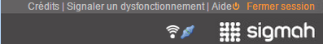
Le double chevron situé en haut à droite de la barre de titre de certains blocs d’une page (exemples : Rappels, Projets liés, Filtrer, Dimensions) sert à réduire et/ou étendre leur contenu afin de laisser plus ou moins de place aux autres blocs de la page.
Ces doubles chevrons sont de quatre types et autant de fonctions :
Si le double chevron est tourné vers la gauche, cela signifie que le bloc peut être réduit vers la gauche :

Si le double chevron est tourné vers la droite, le bloc peut être étendu vers la droite :

Si le double chevron est tourné vers le bas, le bloc peut être réduit vers le bas :

Si le double chevron est tourné vers le haut, le bloc peut être étendu vers le haut :

Dans le bloc « Détails de la phase » d’une phase du sous-onglet “Tableau de gestion” d’un projet, le contenu est organisé au moyen de groupes. Ces groupes utilisent un système de volets qui permet de plier/déplier chaque groupe afin de le masquer. Pour cela, cliquez sur la flèche encadrée tournée vers le haut. Suite à cette action, le groupe correspondant au titre est plié, et apparaît masqué :

Pour déplier le groupe masqué, cliquez à nouveau sur le triangle encadré qui est cette fois tourné vers le bas :

Tous les tableaux utilisés dans le logiciel Sigmah offrent la même possibilité d’être réorganisés en matière d’intitulés de colonnes. Pour cela, survolez à l’aide de votre curseur l’extrémité droite de chaque intitulé de colonne. Vous verrez alors apparaître un triangle vers le bas sur lequel il est possible de cliquer. S’ouvre alors une liste déroulante composée de trois éléments :

A l’ouverture des pages, le tri est croissant par défaut.
N. B. : Certaines colonnes proposent un quatrième élément (« Filtres ») dans leur liste déroulante (voir ci-dessous).
Fonctionnement de « Tri croissant » et « Tri décroissant »
« Tri croissant » et « Tri décroissant » fonctionnent pour les lettres mais aussi pour les numéros (0 à l’infini).

Fonctionnement de « Colonnes »
En survolant à l’aide de votre curseur l’intitulé Colonnes, vous verrez apparaître une nouvelle liste déroulante avec case cochée ou à cocher. Il s’agit des intitulés des colonnes disponibles pour le tableau utilisé :
- un intitulé précédé d’une case cochée signifie que la colonne est affichée,
- un intitulé précédé d’une case non cochée signifie que la colonne est masquée.

Vous pouvez cocher ou décocher un intitulé par un simple clic sur la case correspondante :

Il est également possible d’augmenter ou réduire la largeur des colonnes en survolant l’extrémité droite de chaque colonne. Apparaissent alors deux flèches (l’une tournée vers la gauche, l’autre vers la droite) séparées par un double trait vertical. En maintenant appuyé votre clic, il vous est possible d’étirer ou diminuer la largeur de la colonne sélectionnée.
Pour les colonnes Code, Titre, Phase active et Zone d’intervention
Pour ces quatre colonnes, en survolant à l’aide de votre curseur l’intitulé Filtres, vous verrez apparaître un nouveau champ à remplir avec les lettres/mots de votre choix (par défaut, ce champ s’affiche avec la mention « Saisir le texte » qui s’efface dès que vous placez votre curseur).

La fonction filtre s’applique alors automatiquement.
Pour les colonnes Montant (dépensé, reçu, budgétisé)
En survolant à l’aide de votre curseur l’intitulé Filtres, vous verrez apparaître de nouveaux champs numériques à remplir, précédés de symboles mathématiques :
le symbole " < " vous invite à entrer un montant maximum
le symbole " > " vous invite à entrer un montant minimum
le symbole " = " vous invite à entrer le montant exact que vous recherchez

Pour les colonnes Date (de début, de fin et de clôture)
En survolant à l’aide de votre curseur l’intitulé Filtres, vous verrez apparaître une nouvelle liste déroulante avec case à cocher devant les intitulés "Avant", "Après" et "Le". En les survolant, des calendriers apparaissent, sélectionner une date en fonction de ce que vous recherchez.
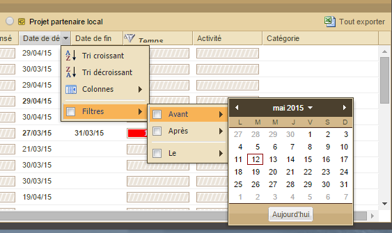
Pour la colonne Temps
Cette colonne dispose d'un filtre particulier, celui des projets clôturés. Par défaut, la case est cochée, ce qui exlut du tableau de bord tous les projets clôturés. En survolant ce Filtre avec votre curseur, vous verrez apparaître une nouvelle liste déroulante vous proposant :
D'exclure tous les projets clôturés
D'inclure les 6 derniers mois : pour inclure les projets clôturés il y a moins de 6 mois
D'inclure les 12 derniers mois : pour inclure les projets clôturés il y a moins de 12 mois
De choisir une limite temporelle : pour inclure les projets clôturés après la limite temporelle choisie

Pour la colonne Catégorie
En survolant à l’aide de votre curseur l’intitulé Filtres, vous verrez apparaître une nouvelle liste déroulante avec case à cocher. Cette liste contient toutes les étiquettes de catégorie disponible dans votre paramétrage de Sigmah sous la forme : intitulé de l'étiquette (nom de la catégorie de l'étiquette).
En jouant avec les cases à cocher dans cette liste, il est possible de filtrer les projets correspondants :
un intitulé précédé d’une case cochée signifie qu'uniquement les projets ayant cette valeur de catégorie seront visibles dans le tableau,
un intitulé précédé d’une case non cochée signifie que cette valeur de catégorie ne sera pas utilisée pour filtrer des projets dans le tableau.

Vous pouvez cocher ou décocher un intitulé par un simple clic sur la case correspondante :

Pour décocher l’ensemble des intitulés sélectionnés en une seule fois, il suffit de décocher la case située à gauche du champ « Filtres ».
Si votre écran d’ordinateur est de petite taille ou si vous réduisez l’écran réservé à Sigmah (via un clic sur  de votre navigateur Internet par exemple), il se peut que vous manquiez de place pour afficher tous les boutons d’une barre d’outils. Dans ce cas, un double chevron
de votre navigateur Internet par exemple), il se peut que vous manquiez de place pour afficher tous les boutons d’une barre d’outils. Dans ce cas, un double chevron  apparaît au bout à droite de cette barre pour vous permettre de continuer à accéder à tous les boutons qui ne peuvent plus être affichés normalement.
apparaît au bout à droite de cette barre pour vous permettre de continuer à accéder à tous les boutons qui ne peuvent plus être affichés normalement.

En cliquant dessus, vous voyez apparaître les boutons qui ont disparu à l’écran en raison du manque de place. Ainsi, dans l’exemple précédent :

En lieu et place de :

|
|
Champ appartenant au fondamentaux de projet (Voir Les « fondamentaux de projet » et les versions de « fondamentaux de projet » ) |
|
|
Historique des modifications d'un champ |
|
|
Connexion Internet disponible / indisponible |
|
|
Sigmah en mode connecté / déconnecté du serveur (Voir Mode déconnecté, bases hors-ligne et projets favoris) |
|
|
Projet propre |
|
|
Projet de financement |
|
|
Projet partenaire local |
|
|
Zone d’intervention |
N. B. : Pour plus d’informations sur ce que le logiciel Sigmah définit comme « Type de projet », voir « Le "Projet" ».
Pour plus d’informations sur ce que le logiciel Sigmah définit comme « Zone d'intervention », voir « La "Zone d'intervention" ».
Code couleurs du suivi de projet
Il permet de classer, distinguer et visualiser de façon rapide l’avancement des activités d’un projet, mais aussi le montant dépensé et le temps écoulé.
La couleur marron indique que la notion correspondante est en cours d’exécution sans dysfonctionnement particulier.
La couleur orange indique que la notion correspondante est en cours d’exécution et approche de son terme sans dysfonctionnement particulier.
La couleur rouge indique que la notion correspondante est en cours d’exécution et proche de son terme avec un risque potentiel associé (variable selon la notion mais en général signifiant que le réalisé pourrait dépasser ou a dépassé le prévisionnel).
Code couleurs des rappels
Un code couleurs existe aussi pour les rappels d’activités situés à gauche du Tableau de bord et des Tableaux de gestion de Projets. Les couleurs, associées à une même icône de rappel, correspondent donc à trois informations différentes comme indiqué ci-dessous :
A faire :
 Fait
Fait
 A faire
A faire
 En retard
En retard
En attente :
 Accompli
Accompli
 En attente
En attente
 En retard
En retard
Dans Sigmah, un projet est une entité rassemblant a minima :
Une identification :
Titre du projet
Code du projet
Une période dans le temps :
Date de début
Date de fin
Un cadre logique
Un budget
Une zone géographique d’intervention
Un responsable de projet
Une ou plusieurs phases de suivi
En fonction des spécificités de son modèle, le projet peut contenir bien d’autres informations : toutes celles que l’organisation juge utile de suivre.
Dans la pratique, les acteurs humanitaires parlent de projet sans faire une nette différence entre leur propre perception du projet, celle qu’en a le bailleur et celle que peut aussi en avoir un partenaire de mise en œuvre. Afin de gagner en précision, notamment dans le cas de cofinancements, la création de concepts distincts de projet s’est révélée nécessaire.
Le logiciel Sigmah propose ainsi trois types de projets :
Ces trois types de projet, au-delà de leurs différences, répondent à la même définition de la notion de projet décrite ci-dessus.
Le « projet propre » correspond a maxima à un projet relevant uniquement des procédures de l’organisation qui est responsable de sa mise en œuvre ou, a minima, à un projet qui n’est perçu par l’organisation ni comme un projet de financement ni comme un projet partenaire local.
Le projet propre porte la vision et le suivi de l’information propres à l’organisation telle qu’elle le perçoit. Il sert par exemple à suivre les rapports internes sur le projet, le processus de prise de décision du lancement de l’action, les indicateurs de suivi que l’organisation souhaite suivre indépendamment, etc.
N. B. :  Icône du projet propre
Icône du projet propre
(Voir "Présentation des principales icônes" pour plus de détails)
Le financement correspond à la ressource financière d’un ou plusieurs projets. La plupart des projets étant financés par un bailleur de fonds, le "Projet de financement" est donc dans la majorité des cas le projet tel que perçu par le bailleur. Il représente la ressource de financement depuis son intention initiale, jusqu’à sa clôture, en passant par la phase de contrat proprement dit. Un financement est donc perçu comme un processus évoluant en plusieurs phases. Certains modèles de financements peuvent n’avoir aucune phase quand il n’y a pas besoin de suivre l’évolution d’une demande et l’état du rendu compte au bailleur.
Un financement est associé à un ou plusieurs bailleurs. Du moment que les fonds et le processus de demandes de financement, de suivi et communication fonctionnent de manière unique et non dispersée, un cofinancement avec plusieurs bailleurs sera considéré comme un "projet de financement" unique. Si les rapports sur le financement, les échéances portant sur le processus, ou les montants financiers doivent être gérés indépendamment pour différents bailleurs, le cofinancement pour le projet sera alors géré avec plusieurs "projets de financement".
Comme le projet, le financement peut être amendé.
N. B. :  Icône du projet de financement
Icône du projet de financement
(Voir “Présentation des principales icônes" pour plus de détails)
Le « projet partenaire local » correspond à l’entité projet telle qu’elle est gérée par un partenaire de mise en œuvre du projet (en général, un partenaire local de l’organisation).
N. B. :  Icône du projet partenaire local
Icône du projet partenaire local
(Voir “Présentation des principales icônes" pour plus de détails)
Une zone d’intervention est la projection géographique d’une organisation humanitaire sur un terrain d’intervention. Chaque organisation humanitaire a généralement plus d’une zone d’intervention. L’ensemble des zones d’intervention correspond au découpage hiérarchique de son activité sur les zones en crise tel qu’il se reflète dans son organigramme.
Des types de zone d’intervention traditionnels sont le Siège, le Desk, la Mission, la Base, etc. Il y aura par exemple le Desk Asie, la Mission Pakistan, la Base Bukavu, etc.
Le logiciel Sigmah définit donc une zone d’intervention comme le lieu géographique (continent, pays, région) à l’intérieur duquel est réalisé le projet. Les zones d’intervention constituent ainsi une arborescence ayant pour tronc le siège.
NB :  Icône de la zone d’intervention
Icône de la zone d’intervention
(Voir "Présentation des principales icônes" pour plus de détails)
Le contact représente dans la base de Sigmah tout individu ou organisation. Il permet à l’utilisateur de lister des individus et des organisations, ses interlocuteurs, collègues et d’autres personnes qu’il aura préalablement identifiées, et de centraliser les informations relatives à chaque personne listée.
La gestion des contacts est flexible (à l’image du fonctionnement des « Projets » ou des « Zones d’interventions ») : chaque contact est créé depuis un « Modèle de contact ».
Le contact, selon son modèle de contact, peut être de deux types :
« individu »
« organisation »
Le logiciel Sigmah définit un rapport comme un formulaire libre dont la structure est décidée par l’organisation. Cette structure est appelée modèles de rapport. Une fois qu'une organisation a conçu un modèle de rapport, ce modèle peut être utilisé pour créer dans un projet ou une zone d'intervention autant de formulaires (les "rapports") suivant la même structure. Chaque modèle est modifiable dans la partie Administration du logiciel.
Les rapports peuvent être complétés et/ou consultés dans les sous-onglets « Tableau de gestion » et « Rapports & documents ».
(Voir "Gestion des modèles de rapport" pour plus de détails)
Pour être flexible, Sigmah s’appuie sur le concept de Modèle pour les concepts suivants :
1. Projet
2. Zone d’intervention
3. Contact
4. Rapport
Concrètement, un modèle de projet permet de créer autant de nouveaux projets qu’on veut qui demanderont tous les mêmes informations, auront le même format de cadre logique, le même nombre de phases, etc.
N. B. : Tout projet créé est associé à une unique zone d’intervention comme indiqué dans le schéma ci-dessus :
Le logiciel Sigmah définit le document comme un fichier attaché. Il est possible d’attacher successivement plusieurs versions d’un même document en conservant l’historique des versions attachées.
(Pour plus de détails, voir "Comment attacher un document ?" et "Comment attacher une nouvelle version d’un document ?")
Dans Sigmah, un indicateur est une variable dont on peut collecter la valeur au fil du temps et sur plusieurs sites de collecte. Pour chaque projet, l’utilisateur peut créer ses propres indicateurs, en les liant ou non au cadre logique.
Sigmah permet de collecter 2 types d’indicateurs :
1. Des indicateurs quantitatifs :
Les valeurs collectées de cet indicateur sur les différents sites au fil du temps seront des valeurs numériques (exemple : « Nombre de kits NFI distribués »)
2. Des indicateurs qualitatifs :
Les valeurs collectées de cet indicateur sur les différents sites au fil du temps seront des valeurs comprises dans une liste définie lors de la création de l’indicateur (exemple : « Perception globale de l’action par ses bénéficiaires », avec comme liste initiale de valeurs : Très bonne, Bonne, Mauvais, Très mauvaise)
(Voir "Comment créer un indicateur ?" pour plus de détails)
Les indicateurs peuvent être organisés par « groupes d’indicateurs ».
Les groupes d’indicateurs fonctionnent de manière similaire à des dossiers pour des fichiers :
Un groupe d’indicateurs peut contenir autant d’indicateurs que souhaités
Un groupe d’indicateurs peut appartenir à un et un seul autre groupe d’indicateur
Les groupes d’indicateurs peuvent reprendre les noms et la structure des éléments du cadre logique, mais les groupes d’indicateurs ne sont pas eux-mêmes des éléments du cadre logique. L’utilisateur peut d’ailleurs toujours modifier des groupes et en créer de nouveau, même si certains groupes ont repris automatiquement à leur création les noms d’éléments du cadre logique.
Les groupes d’indicateurs sont manipulables dans l’écran « Gestion indicateurs », et visibles également dans l’écran « Saisie indicateurs ».
Les valeurs des indicateurs sont collectées sur des « sites de collecte d’indicateurs ».
Pour chaque projet peuvent être définis un ou plusieurs sites de collecte d’indicateurs. Un indicateur ne peut avoir de valeur sans un site.
Un site est un point géographique auquel on souhaite associer une série temporelle de valeurs d’indicateurs. Cela peut être un site de distribution, un centre de santé, un puits, ou plus abstraitement une base ou une capitale pour un indicateur sur le contexte.
Un site a :
- Un nom [obligatoire]
- Un axe : l’axe routier, fluvial le plus proche si le nom du site n’est pas communément reconnu
- Des coordonnées géographiques
- En fonction du pays où se trouve le projet, une appartenance à un ou plusieurs découpages administratifs locaux
Tous les projets ont un site principal. C'est le premier site à définir dans le sous-onglet Carte, il correspond à la localisation du projet. ( Voir 5.3.5 Carte )
Un indicateur peut avoir des données provenant de plusieurs sources :
elles peuvent provenir d’une collecte spécifique de données terrain ;
elles peuvent venir d’un ou plusieurs indicateurs d’autres projets ;
et parfois, elles peuvent combiner ces deux types de source.
Exemple illustratif :
Par exemple, sur un projet de construction de puits co-financé par ECHO et l’UNICEF, le reporting pourra être différent pour chaque bailleur. Il faudra suivre pour ECHO le nombre total de puits forés, tandis que l’UNICEF pourra ne s’intéresser à être informé que des seuls puits que ses fonds financent directement. Le suivi de ce projet dans Sigmah se ferait avec 3 projets : un projet propre PP avec 2 projets financements liés en source de financement, un projet ECHO PE, et un projet UNICEF PU. Si les deux bailleurs demandent par exemple un suivi du débit moyen mensuel des puits, nous pourrions avoir alors comme indicateurs :
|
Projet |
Indicateur |
Sources de données |
|
Projet propre PP |
deb-u, « débit moyen UNICEF », suit tous les puits financés directement par UNICEF |
Collecte spécifique terrain |
|
Projet propre PP |
deb-a, « débit moyen autres », suit tous les autres puits |
Collecte spécifique terrain |
|
Projet UNICEF PU |
flow-rate, « Wells’ average rate of flow » |
PP.deb-u (l’indicateur deb-u du projet propre PP) |
|
Projet ECHO PE |
deb, « débit moyen des puits » |
|
Une catégorie (comme "Type d'activités") permet grâce à une liste de valeurs disponibles (ou "étiquettes" comme: "Formation", "Distribution", "Construction", etc.) de catégoriser un projet. Des catégories de toutes sortes peuvent être créées librement durant le paramétrage. Lorsque l'administrateur choisit une catégorie pour un champ lors du paramétrage (exemple de champ : "Quels sont les types d'activités mises en oeuvre ?"), il peut décider soit que l'utilisateur pourra choisir une unique valeur parmi celles disponibles, soit qu'il pourra choisir plusieurs valeurs (ou "étiquettes") parmi celles disponibles.
Grâce à un code de 6 formes et 40 couleurs proposées, il est possible de créer des raccourcis visuels qui facilite la reconnaissance des valeurs des catégories de projet dans le Tableau des projets.
Exemple de catégories utilisées pour définir le type de crise concerné :
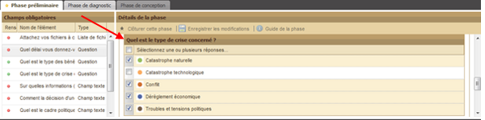
(Voir "Gestion des catégories" pour plus de détails)
Les projets d'aide internationale doivent pouvoir évoluer et s'adapter aux évolutions du contexte. Il est parfois nécessaire de revoir et de suivre l'évolution particulière de certaines caractéristiques fondamentales du projet comme sa date de fin, son budget ou ses objectifs ou résultats attendus. Dans Sigmah, ces caractéristiques sont rassemblées dans le concept de fondamentaux de projet, représenté par cet icone:  .
.
Les fondamentaux de projet peut être verrouillé afin de s'assurer que les caractéristiques fondamentales du projet ne seront plus changées pendant un temps.
Les versions "fondamentaux de projet” permettent de suivre et de sauvegarder toutes les modifications effectuées sur les fondamentaux de projet.
Plus concrètement, les fondamentaux de projet est constitué des éléments suivants dans Sigmah :
le cadre logique du projet ;
tous les indicateurs liés au cadre logique (seule la valeur d'indicateur des fondamentaux de projet verrouillé pourra être modifiée, tandis que ces autres caractéristiques (titre, valeur cible...) seront non-modifiables) ;
les dates de début et de fin du projet ;
le budget planifié d'un projet (ou plus précisément le sous-champ du budget utilisé comme total pour le cacul de la consommation budgétaire) ;
tout indicateur, activité ou champ défini comme "appartenant aux fondamentaux de projet".
Le mode déconnecté permet à un utilisateur de continuer à travailler dans Sigmah même quand il n’a plus de connexion Internet. Il peut ensuite partager son travail avec ses collaborateurs en synchronisant dès qu’une connexion est à nouveau disponible.
En "mode déconnecté", l’utilisateur peut utiliser Sigmah presque intégralement : il peut consulter la dernière version des informations téléchargées, modifier des informations, attacher des fichiers, etc. Seules la modification des rapports, la création de projet et les tâches d’administration ne sont pas accessibles.
N. B. : Pour créer un nouvel utilisateur ou modifier un paramètre de Sigmah, il est nécessaire d’être connecté.
L'apparence du mode déconnecté
Deux icônes permettent de suivre les deux informations clés liées à l'état "déconnecté" :
|
|
Connexion Internet disponible / indisponible |
|
|
Sigmah en mode connecté / déconnecté du serveur |
Le mode déconnecté s'enclenche automatiquement en cas de perte de la connexion Internet.
En mode déconnecté, la partie supérieure gauche de l'écran de Sigmah perd son fond orange, et l'icône d'une prise connectée passe au statut déconnecté dans la partie supérieure droite :
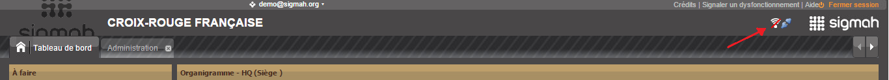
L'environnement hors-ligne
En mode déconnecté, l'utilisateur peut continuer à travailler grâce à deux bases hors-ligne :
sa base hors-ligne de données, qui conserve toutes les données visibles en mode déconnecté ainsi que toutes les modifications qu'il leur a apportées ;
sa base hors-ligne de fichiers, qui contient tous les fichiers qu'il peut consulter ou qu'il a ajoutés en mode déconnecté.
Grâce à ces 2 bases hors-ligne, l'utilisateur peut accéder lorsqu'il a perdu sa connextion Internet à son environnement hors-ligne constitué de :
tous les projets ouverts lorsqu'il a perdu la connexion ;
tous les projets qu'il a marqués comme « favori » ;
toutes les zones d'intervention visibles pour lui.
Ces projets et ces zones d'intervention sont disponibles dans la dernière version qu'il a téléchargée avant la perte de connexion, soit parce qu'il en a visité la page, soit parce qu'il a rafraîchi manuellement ses bases hors-ligne de données et de fichiers.
Un Cadre de données est en quelque sorte « un modèle de modèles de projet ». Il sert à trois usages :
avoir des champs identifiés comme similaire pour faciliter les aggrégations entre des modèles de projet différent : un champ « Nombre de bénéficiaires » par exemple ;
assurer le respect de standard de données ou de mise en œuvre de cadre méthodologique ;
dans une version future de Sigmah, exporter des informations depuis différents modèles de projets vers un format de données standard comme IATI.
Concrètement, une fois un cadre de donnée rendu disponible, il faut que tous les modèles de projet mettent en œuvre ce cadre. La mise en œuvre d'un cadre par un modèle de projet consiste à s'assurer de faire correspondre tous les éléments du cadre avec un champ du modèle de projet. Si le modèle de projet n'a pas de raison de mette en œuvre ce cadre, la raison de sa non-mise en œuvre doit aussi être consignée.
Le « Tableau de bord » constitue la page d’accueil du logiciel Sigmah. A ce titre, il restera toujours ouvert durant une session, disponible en tant que premier onglet (situé à gauche) quelque soit le nombre de pages ouvertes par la suite. Le seul moyen de fermer le « Tableau de bord » consiste à clôturer la session en cliquant en haut à droite de l’écran sur le lien « Fermer session ».
Le « Tableau de bord » est divisé en 5 blocs :
- Liste des rappels « A faire »
- Liste des rappels « En attente »
- Menu
- Zone d’intervention
- Projets
N. B. : En cliquant sur une zone d’intervention ou un projet, vous ouvrez un nouvel écran dont l’onglet viendra s’afficher à droite de celui du « Tableau de bord ».
Les tableaux intitulés « A faire » et « En attente » situés en haut à gauche du Tableau de bord présentent l’ensemble des points créés dans le cadre de projets.
Ils peuvent être classés par ordre alphabétique des titres croissant ou décroissant (par un simple clic sur l’intitulé de colonne « Titre ») et par date attendue croissant ou décroissant (par un simple clic sur l’intitulé de colonne « Date attendue »).
Un clic sur le titre du rappel permet à l’utilisateur d’accéder directement au sous-onglet « Tableau de gestion » du projet contenant ce rappel. Par ailleurs, en survolant le rappel, une info-bulles apparaît contenant le code et le titre du projet auquel est lié ce rappel.
Ajouter copie d'écran avec code et titre du rappel au survol
Pour créer un nouveau point à faire, voir "Tableau des rappels" pour plus de détails.
Pour plus de détails sur les codes couleurs des rappels, voir "Codes couleurs des rappels".
Pour le bouton « Nouveau projet », voir "Comment créer un projet dans le tableau de bord ?" pour plus de détails.
Pour le bouton « Projet test», voir "Le projet test" pour plus de détails.
Pour le bouton « Administration », voir "Administration" pour plus de détails.
Pour le bouton « Importer », voir "Comment importer des données ?".

Situé en haut du Tableau de bord, le tableau des zones d’intervention permet d'accéder à l’ensemble des zones visibles pour un utilisateur.

Par défaut, le tableau des zones d’intervention s’ouvre avec uniquement les zones de plus haut niveau visibles, c’est-à-dire avec les éventuelles zones dépendants de ces zones de plus haut niveau pliées.
Ouvrir/fermer une zone contenant des sous-zones
Une zone contient une ou des sous-zones si son icône est précédée d’un triangle horizontal et gris clair. Si c’est le cas, cliquer sur ce triangle permet de déplirer la zone et de faire apparaître les sous-zones qu’elle contient.

Le triangle, une fois ouvert, devient noir et tourné vers le bas. Pour masquer la sous-zone, cliquez à nouveau sur ce triangle pour qu’il redevienne gris et horizontal.
De même, si une sous-zone est précédé d’un triangle gris clair et horizontal, cela signifie qu’il contient lui aussi des sous-zones. La procédure est la même pour les faire apparaître ou les masquer.
Dans le cas où une icône de zone d’intervention n’est pas précédée d’un triangle, cela signifie que cette zone ne contient pas de sous-zone.
Déplier/replier toutes les zones d’intervention
Afin de gagner du temps, il est possible d’ouvrir en une seule fois l’ensemble des zones et sous-zones contenus dans le tableau des zones d’intervention. Pour cela, cliquez sur le bouton « Déplier tout » situé sous le titre du tableau :

Apparaissent alors l’ensemble des zones et sous-zones existantes :

Pour replier l’ensemble des zones et sous-zones existantes, cliquez sur le bouton « Replier tout » situé à droite du précédent.
Classer les zones d’intervention
Voir "Classer les zones d’intervention" pour plus de détails.
Les utilisateurs rattachés à plusieurs zones d'intervention ont une case à cocher supplémentaire sur le tableau des zones d'intervention : « Afficher uniquement ma zone d'intervention principale ».
[insert screenshot]
Par défaut, cette case à cocher est cochée et ne sont visibles dans le Tableau de bord que les projets, zones d'intervention et contacts liés à cette zone d'intervention principale ou une de ses sous-zones.
Décocher cette case provoque automatiquement un rafraîchissement du tableau de bord pour afficher tous les projets, zones et contacts visibles depuis la zone principale et toutes les zones secondaires liées à l'utilisateur.
Le tableau des projets sur le Tableau de bord de Sigmah liste tous les projets visibles pour l'utilisateur.
Les projets visibles pour un utilisateur sont :
tous les projets dont il est membre de l'équipe (pour plus d'informations, voir Équipe ) ;
et s'il dispose du privilège global « Voir tous les projet » : tous les projets des zones d'intervention attachées à son compte utilisateur, ainsi que tous les projets des sous-zones de ces zones attachées.
Si l'utilisateur est attaché à plusieurs zones d'intervention, le contenu affiché dans ce tableau sera lié à la case à cocher « Afficher uniquement ma zone d'intervention principale » (voir 4.1.3.1. Ma zone d’intervention principale) du tableau des zones d'intervention.
Ce tableau des projets (identique en forme à celui proposé dans la partie basse des pages de zones d’intervention) est composé de 8 colonnes par défaut :
1. code,
2. titre,
3. phase active,
4. zone d’intervention,
5. montant dépensé,
6. temps,
7. activités,
8. catégorie.
Les informations des quatre premières colonnes (code, titre, phase actuelle, zone d’intervention) sont présentées sous format écrit, celles des trois suivantes (montant dépensé, temps, activités) sous forme de diagrammes et celles de la dernière colonne (catégorie) sous forme d’icônes.
Mettre à jour les informations du tableau des projets
L’ensemble des ajouts et modifications que vous ou d’autres utilisateurs apportez en temps réel dans les différents projets ne sont pas affichés de façon automatique dans le tableau des projets.
Aussi, pour avoir la version la plus à jour des informations enregistrées depuis la dernière utilisation de votre Tableau de bord, cliquez sur le bouton « Rafraîchir » situé sous le titre du Tableau.

Apparaît alors sur le tableau en cours de mise à jour une bande de défilement du chargement en cours :

N.B. : Le bouton « Rafraîchir » n’existe pas dans le tableau de projets disponibles dans la page Panorama des zones d’intervention. Pour mettre à jour le tableau, vous avez 2 possibilités :
- quitter puis revenir dans cet écran
- ou appuyer sur la touche F5 de votre clavier.
Regroupement des projets par type
Par défaut, les projets sont listés par « Projet propre ». Dans ce cas, les projets liés à chaque Projet propre sont regroupés par Projet de financement et Projet partenaire local.

En cliquant sur « Projet de financement », la liste des projets est réorganisée : les projets liés à chaque Projet de financement sont désormais regroupés par Projet propre et Projet partenaire local.
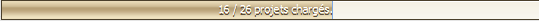
En cliquant sur « Projet partenaire local », la liste des projets est réorganisée : les projets liés à chaque Projet partenaire local sont désormais regroupés par Projet propre et Projet de financement.
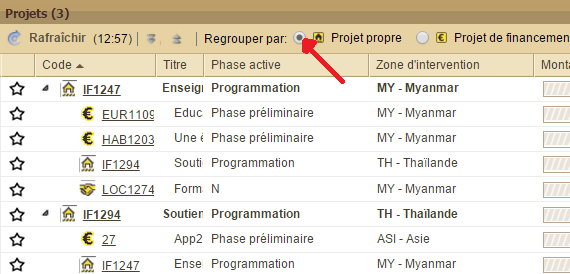
Afficher/Masquer les projets liés
Il est possible de refermer le groupe de chaque projet en cliquant dans la colonne Code sur le triangle noir tourné en bas à droite :

Le triangle devient alors horizontal et gris clair.
Déplier/replier tous les projets
Afin de gagner du temps, il est possible d’ouvrir en une seule fois l’ensemble des projets (selon le type sélectionné) contenus dans le tableau des projets. Pour cela, cliquez sur le bouton « Déplier tout » situé sous le titre du tableau à droite du bouton « Rafraîchir » :

Apparaissent alors également tous les projets liés à ceux que vous avez choisi de faire apparaître par défaut.
Pour replier tous les projets liés et laisser visibles uniquement les projets que vous avez choisi de faire apparaître par défaut, cliquez sur le bouton « Replier tout » situé à droite du précédent.
Mettre en favori un projet
Dans le tableau des projets, la première colonne de gauche est réservée à un système d’étoile qui permet de mettre en favori un projet particulier. Pour activer la fonction, cliquez sur l’étoile grise par défaut :

L’étoile devient alors jaune.
Apparaît également un message de confirmation en bas à droite de l’écran.
Un projet mis en favori fera automatiquement parti de votre base hors-ligne de données en cas d'utilisation du mode déconnecté. Pour en savoir plus, voir Mode déconnecté, bases hors-ligne et projets favoris
Le tableau des contacts liste tous les contacts visibles par l'utilisateur. Si l'utilisateur est attaché à plusieurs zones d'intervention, le contenu affiché dans ce tableau sera lié à la case à cocher « Afficher uniquement ma zone d'intervention principale » (voir 4.1.3.1. Ma zone d’intervention principale) du tableau des zones d'intervention. Ce tableau n'est visible que pour les utilisateurs disposant du privilège global « Voir contacts ». Le tableau de contact se compose :-
- d’un bandeau supérieur comprenant les boutons de création, d’import et d’export des contacts. Il permet également de gérer l’affichage des contacts, et de les modifier ;
- d’un tableau, au centre, partagé en six colonnes visibles (type, nom, prénom,type de modification, objet de modification, valeur de la modification), et six colonnes masquées par défaut (adresse email, identifiant permanent, organisation, organisation mère, date de dernière modification et commentaire de modification) ;
- d’un bandeau en bas permettant de gérer les pages du tableau des contacts.
[Capture d’écran bouton à deux états Voir tous/Mes contacts]
Les zones d’intervention sont accessibles en cliquant dans le tableau des zones d’intervention du Tableau de bord.
Toutes les pages liées aux zones d’intervention ont en commun dans leur partie supérieure un bandeau récapitulant le code et titre de la zone ainsi que d’autres informations éventuellement définies lors du paramétrage.
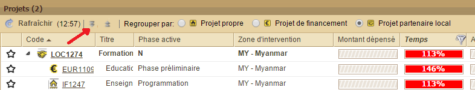
Quatre sous-onglets sont disponibles pour manipuler une zone d’intervention :

La page Panorama contient deux tableaux :
1. En haut, un tableau « Organigramme » composé de 3 colonnes par défaut : code, titre, pays. Si le code d’une ligne est précédé d’un triangle, cela signifie qu’il est divisé en plusieurs sous-codes qui correspondent à autant de bases différentes. Pour visualiser ces sous-codes, cliquez sur le triangle et inversement, pour les masquer, cliquez une nouvelle fois sur le triangle.
2. En bas, un tableau « Projets » composé de 8 colonnes par défaut : code, titre, phase actuelle, zone d’intervention, montant dépensé, temps, activités (ces trois derniers étant présentés sous forme de jauges (voir "Les codes couleurs" pour plus d’informations), catégorie (sous forme d’icônes).
Pour plus de détails sur le tableau « Projets », voir "Tableau des projets" dans la rubrique Tableau de bord.
Classer les zones d’intervention
En survolant à l’aide de votre curseur l’extrémité droite de chaque intitulé de colonne, vous verrez apparaître un triangle vers le bas sur lequel il est possible de cliquer. Apparaît alors une liste déroulante composée de trois éléments : Tri croissant, Tri décroissant et Colonnes.
« Tri croissant » et « Tri décroissant » ne fonctionnent pas seulement pour les lettres mais aussi pour les numéros (0 à l’infini).
En survolant à l’aide de votre curseur l’intitulé Colonnes, vous verrez apparaître une nouvelle liste déroulante avec case cochée ou à cocher. Il s’agit des intitulés des colonnes disponibles pour le tableau utilisé : un intitulé précédé d’une case cochée signifie que la colonne est affichée, un intitulé précédé d’une case non cochée signifie que la colonne est masquée. Vous pouvez cocher ou décocher un intitulé par un simple clic sur la case correspondant.
N. B. : Ces deux tableaux sont les mêmes que ceux du Tableau de bord.
La page Informations regroupe toutes les informations du modèle de zone d’intervention lié. Il contient toujours les champs pour renseigner le code, le titre et les autres caractéristiques fondamentales de la zone d’intervention.
En cliquant sur le symbole  accolé à chaque information, une fenêtre répertoriant l'historique des modifications apparaît :
accolé à chaque information, une fenêtre répertoriant l'historique des modifications apparaît :
: 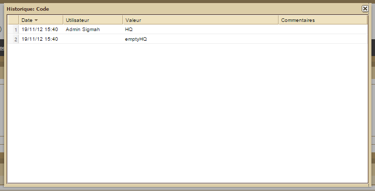
La page Agenda est divisée en deux parties :
1. A gauche, la liste des agendas. Il est possible de masquer la liste des agendas pour agrandir la partie droite du calendrier (voir "Chevrons encadrés : réduire/étendre" pour plus d’informations). Il est également possible de trier par ordre croissant ou décroissant les agendas ainsi que sélectionner les rubriques que l’on souhaite afficher ou masquer en cochant ou décochant les intitulés de la liste déroulante qui apparaît lorsque l’on passe son curseur sur « Colonnes ».

2. A droite, le calendrier qui peut être présenté de 3 façons différentes :
- jour,
- semaine
- et mois.
Par défaut, le calendrier s’affiche sous le format du mois en cours. La date de chaque jour est écrite en gris foncé. Chaque ligne est précédée d’un numéro en orange qui correspond au numéro de la semaine par rapport à l’année en cours.
Les boutons « Précédent » et « Suivant » permettent d’accéder, selon la vue en cours, soit à la semaine soit au mois qui précède ou qui suit.
Il est également possible d’ajouter un événement en cliquant sur le dernier onglet du calendrier intitulé « Ajouter un événement ».

Apparaît alors la boîte de dialogue suivante :
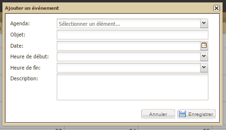
Renseignez les champs indiqués puis cliquez sur OK. L’événement apparaît alors dans le tableau « Agenda ».
N. B. : Pour renseigner toute la journée pour une activité/événement, ne pas remplir d’heure de début ni de fin.
Voir "Rapports & documents" dans la rubrique « Projet ».
Le tableau de gestion d'un projet est composé de trois tableaux :
1. le tableau des rappels
2. le tableau des phases
3. le tableau des projets liés (à ne pas confondre avec le tableau des projets du Tableau de bord et du Panorama)
Ce tableau est composé de deux sous-parties : activités à faire et activités en attente. Tous deux comportent par défaut les 4 colonnes :
- Clôturer ?,
- Intitulé,
- Date attendue,
- Date OK.
Par ailleurs, tous deux proposent :
- D’ajouter un point à faire en cliquant sur le bouton « Ajouter ». Une boîte de dialogue s’ouvre alors :

- De filtrer les points à faire par type d’avancement : Terminé, En cours, En retard. Pour cela, cliquez sur le bouton « Filtrer ». Une boîte de dialogue s’ouvre alors :

N’apparaîtront alors plus que les points à faire dont le statut est celui retenu par le filtrage.
Ces tableaux utilisent par ailleurs un code couleur : le noir étant la couleur normal, le rouge celle des points à faire en retard.
Le tableau des phases reprend les éléments définis dans le cadre du paramétrage. Par exemple, si le modèle retenu est celui de la méthode d’assurance Qualité COMPAS Qualité développée par le Groupe URD, il sera alors composé de 5 phases :
phase préliminaire
phase de diagnostic
phase de conception
phase de mise en œuvre et de suivi
phase de fin de projet
Chaque phase du cycle de projet est décomposée en groupe. A chaque groupe correspond une série de champs à renseigner. Certains de ses groupes de champs peuvent par ailleurs être répétés en plusieurs « itérations » : voir Manipulation des « groupes itératifs ».
Chaque phase est accessible via un système d’onglets dotés d’un code couleur :
gris clair : l’onglet est en cours d’utilisation (par défaut, c’est le premier onglet situé à gauche, celui de la phase préliminaire, qui est actif).
gris moyen : l’onglet est accessible (il est possible de cliquer dessus car la phase est ouverte)
gris foncé : l’onglet est inaccessible (on ne peut cliquer dessus car la phase n’a pas encore été ouverte)
Pour compléter chaque phase, il est nécessaire de procéder à :
soit l’ouverture de la phase suivante en cliquant sur le bouton « Activer cette phase » sous "détails de la phase" (attention : au cas où une phase précédente serait déjà ouverte, tous ses champs obligatoires devraient être renseignés et sauvegardés avant de pouvoir activer la phase suivante).
soit sa fermeture directement en cliquant sur le bouton « Clôturer cette phase » sous « détails de la phase » (attention : tous les champs obligatoires de cette phase doivent être renseignés et sauvegardés avant de la clôturer).
Chaque onglet de phase permet d’accéder à un tableau en deux parties :
à gauche, les « Champs obligatoires »
à droite, les « Détails de la phase »
Champs obligatoires
Dans les « Champs obligatoires » apparaissent les champs auxquels il sera possible de répondre dans les « Détails de la phase » ainsi que l’état de renseignement de la question (voyant rouge pour non renseigné, voyant vert pour renseigné) et le type de réponse possible (champ texte, question à choix multiple, case à cocher).
Détails de la phase
La partie « Détails de la phase » peut comporter différentes rubriques selon les choix réalisés lors du paramétrage.
N. B. : Un lien avec le critère de qualité du référentiel qualité adopté (comme celui du COMPAS Qualité) est disponible grâce à une info-bulle obtenue en laissant le curseur au-dessus du champ.
En cliquant sur ce symbole , la liste des modifications apportées à cette réponse apparaît dans une fenêtre :
Pendant la rédaction des réponses, il est fortement recommandé de cliquer régulièrement sur le bouton « Enregistrer les modifications » afin de réduire les risques de non prise en compte des réponses surtout dans le cas de connexion Internet de qualité réduite.
Guide de la phase
Le bouton « Guide de la phase » à droite sous l’intitulé « Détails de la phase » permet d’accéder à un ou des supports de documentation aidant à la bonne rédaction du rapport en cours. L’intégration de ces supports dans le logiciel Sigmah s’effectue dans le cadre du paramétrage. (voir "Comment créer un modèle de projet ?" pour plus de détails).

N. B. : Un clic sur un rapport dans Tableau de gestion amène directement au sous-onglet Rapports & Documents.
Certains groupes de champs ont la particularité de pouvoir être répétés. Ils sont baptisés des « groupes itératifs », car il est possible de créer plusieurs « itérations » de ces groupes.
Un groupe itératif se présente comme les autres groupes de champs dans Sigmah avec 2 différences notables : un jeu d'onglets en haut représentant chacune des itérations, et sur la partie supérieure de chaque onglet une barre d'outils spécifique pour la manipulation de chaque itération. Devant le nom de chaque onglet, une pastille de couleur verte ou rouge indique respectivement si tous les champs obligatoires du groupe sont remplis ou non.
Groupe itératif screenshot
Pour chaque groupe itératif, il est possible de :
créer une nouvelle itération en cliquant sur l'onglet « + » à droite de tous les les onglets d'itérations ;
de renommer une itération en ouvrant l'onglet de cette itération et en cliquant sur le bouton « Renommer itération » ;
de supprimer une itération en ouvrant l'onglet de cette itération et en cliquant sur le bouton « Supprimer itération ».
Le tableau des projets liés est composé de deux parties :
à gauche, les « Sources de financement » : ce qui finance le projet ouvert
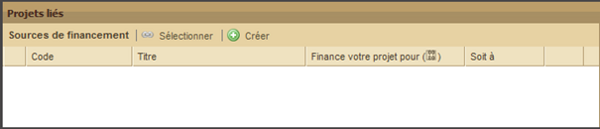
à droite, les « Projets financés » : ce que le projet ouvert finance

1. « Sources de financement »
Pour créer un lien entre un projet déjà existant ouvert et un projet de financement, il existe deux possibilités :
créer un nouveau projet (voir "Comment créer un projet dans une page Projet ?"),
sélectionner un projet existant
Pour sélectionner un projet existant, cliquez d’abord sur le bouton « Sélectionner ». Apparaît alors une boîte de dialogue :
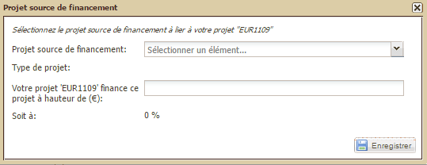
Une fois complétées les informations requises, cliquez en bas sur Ok. S’affiche alors un message de confirmation.
2. « Projets financés »
Pour créer un lien entre un projet déjà existant ouvert et un projet financé, il existe deux possibilités :
créer un nouveau projet (voir "Comment créer un projet dans une page Projet ?"),
sélectionner un projet existant
Pour sélectionner un projet existant, cliquez d’abord sur le bouton « Sélectionner ». Apparaît alors une boîte de dialogue :

Une fois complétées les informations requises, cliquez en bas sur Ok. S’affiche alors le message de confirmation.
En fonction du modèle de projet, cette page peut renseigner les informations sur le projet qui sont indépendantes des phases.
Le sous-onglet « Cadre logique » permet de définir ou mettre à jour le cadre logique d’un projet. Le cadre logique est un tableau dont les lignes sont des objectifs spécifiques, des résultats attendus, des activités ou des conditions préalables. Dans Sigmah, certains modèles de projet permettent pour le cadre logique l’utilisation de groupes d’éléments (groupes d’objectifs spécifiques, de résultats attendus, d’activités ou de conditions préalables).
Plus précisément, le sous-onglet « Cadre logique » permet les actions suivantes sur un cadre logique :
Modifier l’objectif général
Modifier le contenu d’une ligne
Ajouter des lignes
Déplacer des lignes
Copier-coller un cadre logique complet
Exporter un cadre logique complet
Supprimer des lignes
Ajouter des groupes
Renommer des groupes
Supprimer des groupes
Modifier des activités
N.B. : Bien penser à cliquer sur « Enregistrer » pour conserver les modifications faites sur le cadre logique !
Modification de l’objectif général
L’objectif général se trouve en haut du cadre logique. Pour le modifier, il suffit de mettre le curseur dans le champ et de taper l’intitulé d’objectif général désiré :

Modification du contenu d’une ligne
Chaque colonne du tableau contient 4 types d’information :
Logique d’intervention : c’est en quelque sorte le titre de la ligne (intitulé de l’objectif, du résultat, de l’activité, etc.).
Indicateurs : ce sont les indicateurs et/ou objectifs chiffrés relatifs à l'intitulé de la ligne (objectif, résultat ou activité, etc.).
Moyens de vérification : ce sont les sources de vérification des indicateurs de la même ligne.
Risques et Hypothèses : informations complémentaires qui expriment sous quelles hypothèses l’objectif ou le résultat peut être atteint, et quels risques peuvent empêcher son atteinte.
Pour modifier la "Logique d’intervention" (c'est à dire l'intitulé de l'objectif/résultat/activité) ou les "Risques et Hypothèses", il suffit de cliquer sur la case correspondante pour pouvoir modifier son contenu.
Pour ajouter un nouvel indicateur à une ligne du Cadre Logique, cliquer sur le lien « Nouvel indicateur » dans la colonne « Indicateurs ». Cette action ouvre la boîte de dialogue de création d’un nouvel indicateur : voir « Comment créer un « indicateur » ? » pour plus d’informations.
Tous les indicateurs créés dans le cadre logique pourront être retrouvés dans l’écran « Gestion indicateurs ». Et pour chaque élément du cadre logique auquel sera associé un ou plusieurs indicateurs, sera créé un Groupes d’indicateurs portant le même nom.
N.B. : Bien penser à cliquer sur « Enregistrer » pour conserver les modifications faites sur le cadre logique !
Ajout de lignes
Pour ajouter des lignes, cliquez à gauche de la ligne sur le lien « Ajouter » situé juste en de-dessous du nom de la ligne. Dans le cas de la ligne « Objectifs spécifiques », cela donne donc l’exemple suivant :

Si, dans votre modèle, des groupes sont utilisés pour les objectifs spécifiques, apparaît alors la boîte de dialogue suivante :

Une fois le groupe choisi dans la liste déroulante, cliquez sur OK. Apparaît alors votre nouvel objectif spécifique avec, par défaut, la lettre suivant celle de l’objectif précédent éventuellement suivie du nom donné à cet objectif :
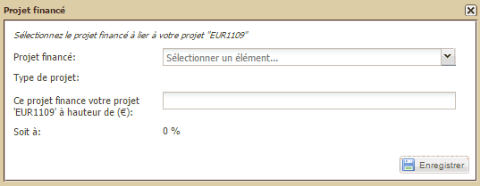
N.B. : Les activités du cadre logique s’affichent automatiquement dans l’agenda.
Déplacement de lignes
A partir du moment où votre cadre logique possède plus d’un objectif spécifique (ou résultat attendu, ou activité, ou condition préalable), il est possible de réorganiser à votre souhait l’ordre de leurs lignes via un clic droit sur celle qu’il vous intéresse de déplacer. Le logiciel vous propose alors de la monter, descendre ou supprimer :

Copier-coller un cadre logique complet
Afin d’éviter de devoir réécrire totalement un nouveau cadre logique semblable à un précédent, le logiciel Sigmah permet de copier l’intégralité d’un cadre logique et de le copier dans un cadre logique nouvellement créé.
Voir "Comment copier-coller un cadre logique ?".
Exporter un cadre logique complet
Afin de permettre une utilisation du cadre logique existant dans un logiciel de tableur de votre suite bureautique, le logiciel Sigmah permet d'exporter l'intégralité d'un cadre logique et de l'enregistrer dans votre ordinateur en format.ods (Open Document Spreadsheet) ou .xls (Excel) selon les paramètres que vous avez définis dans la rubrique "Paramètres généraux" de votre zone d'Administration.
Pour cela, cliquez en haut à droite du cadre logique sur le bouton "Exporter" :

Apparaît alors une boîte de dialogue relative à l’enregistrement du fichier d’export dans votre ordinateur :

Sélectionnez l’emplacement et le dossier de votre choix puis cliquez sur le bouton « Enregistrer ».
Suppression de lignes
Pour supprimer une ligne cliquez sur l’intitulé générique (Groupe OS, Groupe RA, Groupe A, Groupe CP, ou OS, RA, A, CP). Apparaît alors un bouton « Supprimer » :

Ajout de groupes
Pour ajouter des groupes, cliquez à gauche de la ligne sur le lien « Ajouter un groupe » (souligné) situé le plus bas sur la ligne. Exemple pour le cas de groupes d’objectifs spécifiques :

Apparaît alors la boîte de dialogue suivante :

Après avoir saisi le nom que vous voulez donner à votre groupe, cliquer sur « OK ».
Votre groupe est créé et apparaît dans le cadre logique.

Renommage de groupes
Pour renommer un groupe, cliquez sur l’intitulé générique (Groupe O.S., Groupe R.A., Groupe A., Groupe C.P.). S’ouvre un menu contenant un bouton « Renommer » :

En cliquant sur le bouton « Renommer », apparaît alors la boîte de dialogue suivante :

Tapez le nom de votre choix puis cliquer sur OK. Le nouveau nom du groupe apparaît alors dans votre cadre logique.
Suppression de groupes
Pour supprimer un groupe, cliquez sur l’intitulé générique (Groupe O.S., Groupe R.A., Groupe A., Groupe C.P.). S’ouvre un menu contenant un bouton « Supprimer » :

En cliquant sur le bouton « Supprimer », le groupe disparaît.
Modification des activités
Pour les activités, toutes les actions décrites précédemment sont possibles (déplacer ou supprimer des lignes) ; cependant, certains éléments importants évoluant durant le projet, et liés aux activités, doivent être modifiables.
C’est pourquoi vous pouvez :
Modifier la date de début d’une activité,
Modifier la date de fin d’une activité,
Faire évoluer l’avancement d’une activité.
Pour modifier une activité déjà créée, cliquez sur l’intitulé générique de l’activité (A A.1.1 par exemple). Choisissez l’option « Modifier ».

La boîte de dialogue suivante apparaît :

Modifiez l’élément souhaité :
Cliquez sur le calendrier à côté des dates pour les modifier,
Faites glisser le curseur pour modifier l’avancement de l’activité.
NB : l’action de modifier la barre d’avancement d’une activité aura pour répercussion de faire évoluer la barre d’avancement « Activité » dans le bloc « projets » du tableau de bord.
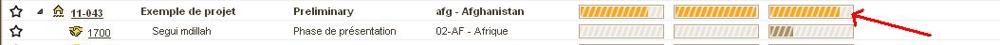
Rappel : Avant de quitter chacun des écrans suivants, n’oubliez pas de cliquer sur « Enregistrer ».
Le sous-onglet de Gestion des indicateurs permet de :

Définition d’indicateurs
Pour créer un indicateur, cliquez sur le bouton « Nouvel indicateur ». Si vous avez sélectionné une ligne d’un groupe d’indicateurs dans le tableau, l’indicateur que vous allez créer en cliquant sur « Nouvel indicateur » appartiendra automatiquement à ce groupe (vous pourrez le déplacer par la suite).
(Voir "Comment créer un indicateur ?" pour plus de détails sur la création d’indicateurs).
Pour modifier un élément d’un indicateur, cliquez sur le lien portant le nom de l’indicateur.
Pour supprimer un indicateur, cliquez sur la ligne de l’indicateur dans le tableau (et non sur le lien) pour la sélectionner, puis cliquez sur le bouton « Supprimer ».
Création et renommage de groupes d’indicateurs
Les groupes d’indicateurs permettent d’organiser les indicateurs d’un projet. (voir la définition du « Groupe d’indicateurs » pour plus de détails).
Pour créer un groupe d’indicateurs, cliquez sur le bouton « Nouveau groupe ». Si vous avez sélectionné une ligne d’un groupe d’indicateurs dans le tableau, le groupe que vous allez créer en cliquant sur « Nouveau groupe » appartiendra automatiquement à ce groupe (vous pourrez le déplacer par la suite).
Pour renommer un groupe d’indicateurs, il suffit de double-cliquer sur son nom. Pensez à cliquer sur « Enregistrer » une fois le groupe renommé.
Organisation d’indicateurs et de groupes d'indicateurs
Les indicateurs peuvent être organisés par groupes. Chaque groupe peut lui-même contenir des sous-groupes, etc.
Pour mettre un indicateur dans un groupe, il y a 3 solutions possibles :
Si l’indicateur n’est pas encore créé, sélectionnez le groupe où vous voulez le mettre, et cliquez ensuite sur le bouton « Nouvel indicateur ». L’indicateur sera alors créé dans le groupe sélectionné.
Ouvrir le formulaire de modification de l’indicateur, choisissez le groupe dans lequel vous souhaitez le placer et cliquer sur « Enregistrer ».
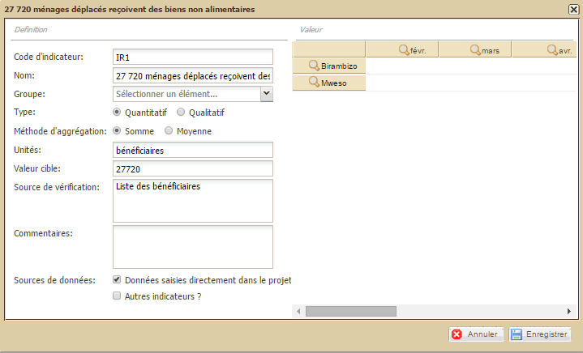
Utiliser le « glisser-déposer » : cliquez avec le bouton gauche de la souris sur la ligne de l’indicateur à déplacer, puis, sans relâcher le bouton après le clic, déplacer le curseur de la souris jusqu’au-dessus du groupe où vous souhaitez mettre votre indicateur, et enfin relâcher le bouton.
Pour mettre un groupe d’indicateurs dans un autre, il y a 2 solutions possibles :
Si le groupe n’est pas encore créé, sélectionnez le groupe où vous voulez le mettre, et cliquez ensuite sur le bouton « Nouveau groupe ». Le groupe sera alors créé dans le groupe sélectionné.
Utiliser le « glisser-déposer » : cliquez avec le bouton gauche de la souris sur la ligne du groupe à déplacer, puis, sans relâcher le bouton après le clic, déplacer le curseur de la souris jusqu'au-dessus du groupe où vous souhaitez mettre votre groupe sélectionné, et enfin relâcher le bouton.
Pour exporter les indicateurs dans une feuille de calcul (Open Document Spreadsheet ou MS Excel), vous avez juste à cliquer sur le bouton "Exporter" en haut à droite du tableau des indicateurs.

Le sous-onglet Carte permet de :
Définir la localisation du projet (côté gauche : Site)
Définir des sites de collecte d’indicateurs (côté gauche : Site)
Visualiser des sites de collecte d’indicateurs (côté droit : Carte)

Définir la localisation du projet
Cliquez sur « Définir la localication du projet », une fenêtre apparaît et vous invite à géolocaliser votre projet.
Renseignez les données et cliquez sur « Enregistrer ».
Définir des sites de collecte d’indicateurs
Pour créer un site : cliquez sur « Nouveau site d’intervention » (voir Comment créer un site de collecte d’indicateur ?" pour plus de détails sur la création de sites)
Pour modifier un site : cliquez sur le nom du site, puis sur le bouton « Modifier »
Pour supprimer un site : cliquez sur le nom du site, puis sur le bouton « Supprimer »
Visualisation des sites de collecte d’indicateurs
La partie droite du sous-onglet Carte permet de visualiser les sites de collectes d'indicateurs et la localisation du projet.
Le sous-onglet de saisie des indicateurs permet 2 actions :
Saisir ou consulter les valeurs collectées des indicateurs
Consulter ou modifier la définition d’indicateurs
Manipulation du tableau
Pour manipuler les valeurs des indicateurs, 3 types de vues sont proposés dans cet écran :
La vue par Site : elle présente pour un site donné un tableau des valeurs de tous les indicateurs (en lignes) pour tous les mois (en colonnes).
La vue par Indicateur : elle présente pour un indicateur donné un tableau de toutes ses valeurs sur tous les sites (en lignes) et tous les mois (en colonnes).
La vue par Mois : elle présente pour un mois donné les valeurs de tous les indicateurs pour tous les sites durant ce mois.
Le choix d’avoir les indicateurs en colonnes et les sites en lignes, ou vice-versa, peut être changé au moyen du bouton à flèches opposées qui se trouve dans le coin en haut à gauche du tableau (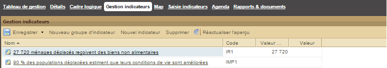).
Pour changer de vue, 3 possibilités sont offertes :
Les boutons loupe ( ) : adossés à chaque en-tête du tableau (Site, Indicateur ou Mois), ils permettent de changer de vue en prenant comme référence le site, indicateur ou mois désiré. Exemple : en cliquant sur bouton loupe à côté d’un en-tête d’indicateur « Nb de kits NFI distribués », la vue du tableau est changée pour montrer une vue par indicateur pour l’indicateur « Nb de kits NFI distribués ».
) : adossés à chaque en-tête du tableau (Site, Indicateur ou Mois), ils permettent de changer de vue en prenant comme référence le site, indicateur ou mois désiré. Exemple : en cliquant sur bouton loupe à côté d’un en-tête d’indicateur « Nb de kits NFI distribués », la vue du tableau est changée pour montrer une vue par indicateur pour l’indicateur « Nb de kits NFI distribués ».
Les listes déroulantes de filtre : situées juste au-dessus du tableau, les 3 listes déroulantes de filtre « Site », « Indicateur » et « Valeur d’indicateur pour », permettent de changer de vue pour afficher respectivement le tableau en vue par Site avec le site sélectionné, le tableau en vue par Indicateur pour l’indicateur sélectionné, le tableau en vue par Mois pour le mois sélectionné.
Les boutons « vue précédente » ( ) et « vue suivante » (
) et « vue suivante » ( ) : ils permettent de naviguer dans l’historique des vues qu’on a choisies.
) : ils permettent de naviguer dans l’historique des vues qu’on a choisies.
La vue par défaut : c’est la vue qui est chargée quand on ouvre le sous-onglet « Saisie indicateurs ».
La case à cocher « Vue par défaut » permet de savoir si la vue en cours est la vue par défaut, et éventuellement de changer celle-ci :
Si la case « Vue par défaut » est cochée : la vue en cours est la vue par défaut.
Si la case « Vue par défaut » n’est pas cochée : la vue en cours n’est pas la vue par défaut, mais peut le devenir en cochant la case.
Saisie de valeur d’indicateur
Pour saisir une valeur d’indicateur :
choisissez une vue appropriée pour accéder à la valeur à saisir ;
cliquez sur la cellule que vous souhaitez modifier ;
entrez la valeur, et terminez sa saisie par la touche « Entrée » ;
cliquez sur le bouton « Enregistrer » en haut à gauche de l’écran pour sauvegarder les données.
Consultation ou modification de la définition d’indicateurs
Pour consulter ou modifier la définition d’un indicateur, cliquez sur le bouton crayon () se trouvant à côté du nom d’un indicateur dans le tableau. Cela ouvrira la fiche de l’indicateur concerné (voir "Définition d’indicateurs" pour plus de détails).
La page Agenda est divisée en deux parties :
1. A gauche, l’agenda à proprement parler qu’il est possible de masquer pour agrandir la taille du calendrier (voir « Chevrons encadrés » pour plus de détails). Il est également possible de sélectionner les rubriques que l’on souhaite afficher ou masquer en cochant ou décochant les intitulés de la liste de l’agenda.

2. A droite, le calendrier qui peut être présenté de 3 façons différentes : aujourd’hui, semaine et mois. Par défaut, le calendrier s’affiche sous le format du mois en cours. La date de chaque jour est écrite en gris foncé. Chaque ligne est précédée d’un numéro en orange qui correspond au numéro de la semaine par rapport à l’année en cours. Les onglets « Précédent » et « Suivant » permettent d’accéder soit à la semaine soit au mois qui précède ou qui est à venir. Il est également possible d’ajouter un événement en cliquant sur le dernier onglet du calendrier intitulé « Ajouter un événement ».
Apparaît alors la boîte de dialogue suivante :
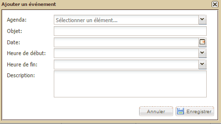
Renseignez les champs indiqués puis cliquez sur Enregistrer. L’événement apparaît alors dans le tableau « Agenda ».
Apparaissent ici les activités indiquées dans le cadre logique.
Le sous-onglet « Équipe » permet de définir et consulter la liste des membres de l'équipe d'un projet. Pour les utilisateurs ne disposant que du droit « Voir ses projets », seuls les projets dont ils sont expliciteent membres de l'équipe seront visibles pour eux dans le tableau des projets.
Ajouter copie d’écran du sous-onglet
Trois actions sont possibles dans cet écran via 3 boutons distincts :
« Ajouter un membre à l'équipe » permet d'ajouter un utilisateur comme membre de l'équipe ;
« Ajouter un profil utilisateur à l'équipe » sert à ajouter tout un profil à l'équipe : tous les les utilisateurs disposant de ce profil seront considérés comme membres de l'équipe ;
la corbeille à la fin de chaque ligne de membre de l'équipe permet de retirer l'utilisateur ou le profil utilisateur correspondant de la liste des membres de l'équipe.
Le responsable de projet fait naturellement toujours partie de l'équipe. Il est possible de changer le responsable en modifiant la valeur du champ « Responsable de projet » qui se trouve, selon le paramétrage du modèle de projet, dans le sous-onglet « Détails » ou une des phases.
Le sous-onglet « Rapports & Documents » permet de réaliser deux actions :
Rédiger un rapport selon un modèle défini lors du paramétrage
Joindre un document informatique enregistré dans votre ordinateur
N.B. : Rapports et documents figurent dans le même tableau mais se distinguent par des icônes différenciées :
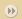 rapports
 documents
documents
Créer un rapport
Pour créer un rapport, cliquez sur le bouton « Nouveau rapport » dans la partie gauche de votre écran :

Apparaît alors une liste des types de rapport disponibles pour ce projet, organisés par phase :

Sélectionnez la phase de votre choix en cliquant sur son intitulé. Apparaît alors une boîte de dialogue. Renseignez le champ du titre puis cliquez sur Ok pour valider.

Apparaissent alors :
un message de confirmation en bas à droite de l’écran
dans la partie droite de l’écran, la structure de votre rapport telle que définie par le modèle lors de votre paramétrage.

Ouvrir un rapport existant
Pour afficher dans la partie droite de la page le détail du rapport qui vous intéresse, cliquez sur son titre dans la partie gauche :

Le tableau de droite affiche alors le contenu du rapport sélectionné, reprenant son titre en intitulé de partie haute.
Afficher en mode plan ou mode complet
Par défaut, le rapport s’ouvre en mode complet, c’est-à-dire dans un format présentant de façon dépliée l’ensemble des questions (champs du modèle) et des réponses. Il est alors possible de jouer sur la taille des parties et sous-parties du rapport en cliquant sur les boutons - pour réduire une réponse (ou + pour la déplier à nouveau).

Il est également possible de visualiser le rapport en mode plan qui affiche automatiquement le rapport dans sa forme la plus condensée, c’est-à-dire avec l’ensemble des réponses cachées, laissant seulement apparaître les titres de partie et les questions.

Exporter un rapport
Pour exporter un rapport, sélectionnez le rapport de votre choix dans le tableau de gauche « Rapports & Documents » puis cliquez sur le bouton « Export Word » situé sous le titre du tableau de droite qui porte dès lors le nom du rapport sélectionné.
Apparaît alors la boîte de dialogue d’enregistrement de fichier de votre ordinateur :

Une fois le dossier de votre choix sélectionné, cliquez sur Enregistrer. Une fois le téléchargement terminé, le fichier est alors disponible sous forme .rtf.
Ajouter un fichier
Pour joindre un document cliquez sur le bouton « Ajouter un fichier ».
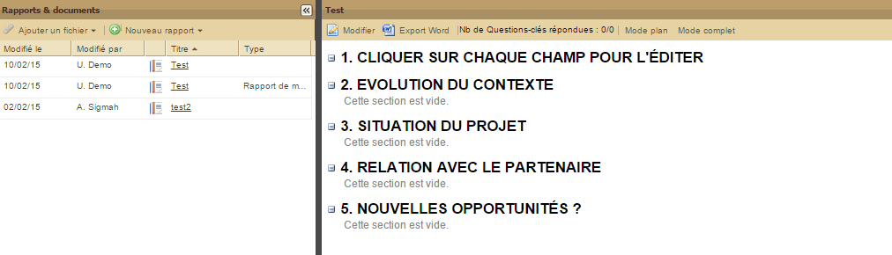
Un menu se déroule alors avec tous les types de document qu’on peut attacher à ce projet, regroupés par écran (phase ou sous-onglet « Détails ») :
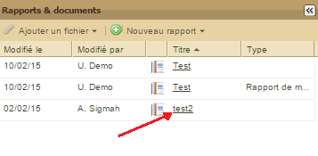
Sélectionnez le type de document votre choix en cliquant sur son intitulé. Apparaît alors une boîte de dialogue.

Cliquez sur le bouton « Ajouter un fichier » en bas à gauche. Apparaît alors la boîte de dialogue de sélection de fichier de votre ordinateur :

Sélectionnez le fichier de votre choix puis cliquez sur le bouton « Ouvrir ».
Apparaît alors une boîte de dialogue vous proposant d’ajouter un point en attente pour ce document :

Cliquez sur « Oui » pour confirmer ou « Non » pour annuler.
Si vous cliquez sur « Oui, apparaît alors une nouvelle boîte de dialogue relative à la création du point en attente.
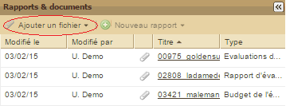
Au final, votre document attaché apparaît donc dans le tableau « Rapports & Documents » avec les informations suivantes :
Date de modification
Auteur de la modification
Titre
Type
Phase dans laquelle s’est fait l’attachement

Ouvrir un document
Pour ouvrir un document, il suffit de cliquer sur son titre.
Les contacts sont accessibles en cliquant dans le tableau des contacts du Tableau de bord.
Toutes les pages de contact ont en commun dans leur partie gauche une « Fiche de contact » récapitulant le nom et l'organisation du contact ainsi que d’autres champs définies lors du paramétrage.
Pour manipuler un contact, trois sous-onglets sont disponibles à droite de la page :
Caractéristiques
Relations
Historique
Toutes les informations sur un contact sont modifiables dans l’onglet « Caractéristiques ».
[insérer capture d’écran]
Le sous-onglet « Caractéristiques » permet de modifier tous les champs disponibles, classés par groupes (comme l’onglet « Détails » d’un projet).
Ce sous-onglet permet en plus deux actions par deux boutons distincts :
« Exporter » pour générer un « Export de contact » (voir L' « Export de contact » pour plus d'informations) ;
« Supprimer » pour supprimer le contact.
Copie d'écran onglet Caractéristiques
Le tableau relations permet de suivre toutes les relations qu’un contact entretient avec d’autres contacts, des projets ou des zones d'intervention. Il est organisé autour de six colonnes :
Relation : nom du champ de la « Liste de contact » qui a généré cette relation ;
Objet : nom du groupe contenant le champ de type « Liste de Contacts » qui a généré cette relation ;
Type : type de relation avec le contact (projet, zone d’intervention, modèle de contact, etc.).
Nom : nom du contact, projet ou zone d’intervention ;
Membre : nom de la page dont est membre la relation ou du contact qui est membre d’une page donnée.
[insert screenshot]
Deux boutons de filtre, « Ses membres » et « Appartenances comme membres », existent afin filtrer le tableau pour n'afficher respectivement que les membres du contact, ou les relations dans lequel le contact est lui-même membre.
Un bouton « Exporter » est également présent pour exporter les relations d’un contact.
Ce sous-onglet permet de recenser toutes les modifications apportées à un contact (modification dun champ, ajout d'une relation à un projet, suppression d'une relation à une zone d’intervention, etc.).
Cette partie du manuel a pour objectif de rassembler l’information sur toutes les questions usuelles que l’on se pose à l’utilisation de Sigmah.
Le logiciel Sigmah permet de créer un nouveau projet de deux manières différentes. Votre choix de l’une ou l’autre dépendra de surtout des liens du nouveau projet avec d’autres, mais aussi de méthodes de travail personnelles. Voir :
Pour supprimer un projet, cliquez sur le bouton "Supprimer ce projet" situé à droite de tous les onglets relatifs à une page "projet" (Tableau de gestion, Détails, Cadre logique, Gestion indicateurs, Saisie indicateurs, Agenda, Rapports & documents).
Apparaît alors une boîte de dialogue qui vous demande de confirmer ou non cette suppression.
Attention : Le bouton "Supprimer ce projet" n'apparaît que si vos droits d'utilisateurs vous permettent de supprimer un projet (voir 6.2.6. Comment modifier un profil ?)
La première manière de créer un projet est située dans le Tableau de bord. Pour cela, cliquez en bas à gauche de la page dans le bloc « Menu » :

S’ouvre alors une boîte de dialogue :
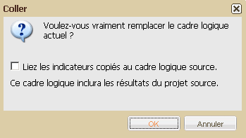
Une fois les champs de texte et listes déroulantes renseignés, cliquez sur Créer. Apparaîtra alors un message de confirmation en bas à droite de votre écran.
La possibilité de créer un nouveau projet dans une page Projet se trouve dans le bloc « Projets liés » situé en bas de l’écran. Ce bloc est divisé en deux colonnes « Sources de financement » et « Projets financés ».
Dans les deux cas, il vous faudra cliquer sur le bouton « Créer » situé à droite du nom de la colonne :
Cas n°1 :

Ou cas n°2 :

S’ouvre alors une boîte de dialogue :
Cas n°1 :

Cas n°2 :

Une fois les champs de texte et listes déroulantes renseignés, cliquez sur Créer. Apparaîtra alors un message de confirmation en bas à droite de votre écran.
Pour compléter chaque phase, il est nécessaire de procéder à :
son ouverture en cliquant sur le bouton « Activer cette phase » (attention : au cas où une phase précédente serait déjà ouverte, tous ses champs obligatoires devraient être renseignés et sauvegardés avant de pouvoir activer la phase suivante).
sa fermeture en cliquant sur le bouton « Clôturer cette phase » (attention : Tous les champs obligatoires de cette phase doivent être renseignés et sauvegardés avant de la clôturer).
Pour plus de détails sur le changement de phase, voir "Le tableau des phases".
Une version de fondamentaux de projet permet de garder trace d'une configuration des caractéristiques fondamentales d'un projet. Pour plus d'informations, voir 3.8 Les "fondamentaux de projet" et les versions de "fondamentaux de projet".
Les champs appartenant aux fondamentaux de projet sont illustrés par ce symbole  .
.
Pour créer une version de fondamentaux de projet :
Ouvrez le projet en question.
Faîtes les modifications souhaitées sur le projet.
Verrouillez les fondamentaux de projet : voir 5.3.1 Verrouiller ou Déverrouiller des fondamentaux de projet
Validez votre version : voir 5.3.2 Valider une version de fondamentaux de projet
Entrez le nom de votre nouvelle version dans la boîte de dialogue "Valider version" (cf ci-dessous)

Le verrouillage/déverrouillage des fondamentaux de projet permet de figer une version des fondamentaux de projet afin que tout le monde s'entende sur une version finale avant de valider.
L'action de verrouillage/déverrouillage n'est disponible qu'aux utilisateurs qui ont la permission correspondante dans leur profil.
Pour verrouiller des fondamentaux de projet, cliquez sur "Verrouiller fondamentaux" dans l'espace dédié aux fondamentaux de projet.

Une fois les fondamentaux de projet verrouillé, vous pouvez valider une nouvelle version des fondamentaux de projet (voir 5.3.2 Validation d'une nouvelle version).
Pour ouvrir à nouveau les modifications sur les fondamentaux de projet, cliquez sur "Déverrouiller fondamentaux".
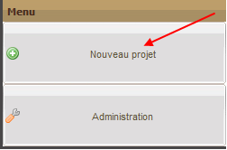
Une fois les fondamentaux de projet verrouillé, il est possible de sauvegarder cet état des fondamentaux de projet en validant la création d'une nouvelle version des fondamentaux de projet.
L'action de validation d'une nouvelle version des fondamentaux de projet n'est disponible qu'aux utilisateurs ayant la permission associée dans leur profil utilisateur.
Pour valider une version des fondamentaux de projet, il suffit de cliquer sur le lien « Valider version ».
Une fenêtre vous invite à donner un nom à votre nouvelle version, puis à cliquer sur "Créer version".
La nouvelle version apparaît désormais dans la liste déroulante du bloc de gestion des fondamentaux de projet.
Pour comparer deux versions, cliquez sur la flèche déroulante du bloc dédié aux fondamentaux de projet.
La liste des versions existantes apparaît alors. Cliquez sur "Comparer les versions" :

La fenêtre suivante s'ouvre et vous invite à choisir les versions que vous souhaitez comparer. Les différences entre les deux versions choisies apparaissent alors :

Pour renommer le titre d'une version des fondamentaux projet, ouvrez la liste déroulante du bloc de gestion de fondamentaux de projet, et cliquez sur "Renommer des versions" :
La boîte de dialogue suivante apparaît :

Modifiez le nom de la version puis cliquez sur "Enregistrer".
Une fois que plusieurs versions de fondamentaux de projet ont été créées, il est possible d'afficher le projet dans l'état où il était au moment où ces versions de fondamentaux de projet ont été validées.
Pour afficher une version ancienne de fondamentaux de projet, ouvrir la liste déroulante dans le bloc de gestion des fondamentaux de projet :
La partie basse de la liste déroulante qui s'affiche titrée "Afficher version :" permet d'afficher le projet dans l'état d'une des versions de fondamentaux de projet listée en dessous.
Il suffit alors de sélectionner la version de fondamentaux de projet qu'on souhaite afficher, et la page du projet est alors rechargée en affichant le projet dans cet état passé.
Revenir à la version de travail depuis une version passée du projet
Une fois qu'on a affiché une version passée de fondamentaux de projet, le bloc de gestion des fondamentaux de projet présente un bouton unique "Retour à la version de travail" en lieu et place des deux boutons "Verrouiller fondamentaux" et "Valider version".

Pour quitter ce mode de visualisation d'une version ancienne de fondamentaux de projet et revenir à la version de travail, il suffit de cliquer sur le bouton "Retour à la version de travail".
Afin d’éviter de devoir réécrire totalement un nouveau cadre logique semblable à un précédent, le logiciel Sigmah permet de copier l’intégralité d’un cadre logique et de le copier dans un cadre logique nouvellement créé.
Pour cela, accédez à la page Cadre logique du projet que vous souhaitez copier puis de cliquer à droite de la deuxième ligne du bloc Cadre logique sur le bouton « Copier » :

Apparaît alors une boîte de dialogue en bas à droite de l’écran qui vous confirme la bonne prise en compte des éléments du cadre logique.
Accédez ensuite à la page Cadre logique du projet que vous souhaitez compléter sur la base du précédent en cliquant sur le bouton « Coller » :

Apparaît alors une boîte de dialogue qui vous demande de :
confirmer l’insertion des informations du cadre logique copié :
choisir si vous souhaitez lier les indicateurs copiés à leur original du cadre logique source : si oui, les indicateurs du cadre logique source seront sélectionnés comme source de données des indicateurs créés dans le cadre logique collé (voir la définition du concept de « Source de données » d’indicateur pour plus de détails).
Si vous cliquez sur Ok, apparaît alors en bas à droite de votre écran un message de confirmation.
Voir "Rapports & documents" pour plus de détails sur ce processus.
Ajouter une nouvelle version
Pour ajouter une nouvelle version d'un document déjà attaché, il faut cliquer sur le bouton "Nouvelle version".
Différence entre l'attachement d'un nouveau fichier et l'attachement d'une nouvelle version
Un champ d'attachement de fichiers dans Sigmah peut être configuré pour accepter un nombre limité ou illimité de documents. Par contre, il est toujours possible d'ajouter autant de version que l'on souhaite d'un même document tant que le champ d'attachement de fichiers n'est pas verrouillé (lorsque la phase est clôturée par exemple).
Par exemple, dans la copie d'écran suivante, le champ "Rapport de diagnostic" a une limite de nombre de fichiers à attacher fixée à 1 lors du paramétrage. Cette limite est indiquée par la mention "(1 document(s) max.)" dans la barre de titre du champ.
Le bouton "Ajouter un fichier" permet d'ajouter un nouveau fichier au champ de fichier. Ainsi, dans un champ baptisé "Photos", on pourrait donner la liberté d'attacher un nombre illimité de fichiers images. Si la limite du nombre de fichiers autorisé est atteinte, le bouton "Ajouter un fichier" sera désactivé comme sur la copie d'écran ci-dessus.
Le bouton "Nouvelle version" permet d'ajouter une nouvelle version qui viendra remplacer la version d'un fichier déjà attaché. Les précédentes versions du fichier restent disponibles en cliquant sur le lien "Historique".
Les indicateurs se créent depuis le sous-onglet « Gestion des indicateurs » d’un projet en cliquant sur le bouton « Nouvel indicateur ».
S’ouvre alors la pop-up de création d’indicateur (par défaut de type quantitatif) :
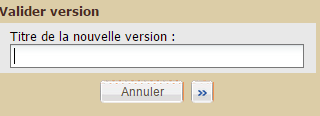
Quelque soit le type de l’indicateur (quantitatif ou qualitatif), les champs à remplir pour créer un indicateur ont les rôles suivants :
Code d’indicateur [obligatoire] : un code pour identifier rapidement l’indicateur (exemples : I3.5, nfi, nb.puits)
Nom [obligatoire] : le nom complet de l’indicateur (exemple : Nombre de kits NFI distribués, Perception globale de la qualité de l’action par ses bénéficiaires)
Type : Quantitatif ou Qualitatif (voir la définition de l’indicateur)
Commentaires : un espace pour donner des informations complémentaires sur l’indicateur
Datasources: les sources de données pour cet indicateur. Deux types de source sont possibles. En cochant la case "Données saisies directement" dans le projet en cours on permet d'intégrer dans la valeur finale de l'indicateur les données saisies dans l'onglet "Saisie des indicateurs". En cochant "Autres indicateurs", on permet d'aggréger également la valeur d'indicateurs provenant d'autres projets.
Si l’indicateur est de type « Quantitatif », les champs suivants sont aussi proposés :
Méthode d’agrégation [obligatoire] :
Somme si les valeurs collectées sur les différents sites au fil du temps doivent être additionnés pour produire la valeur globale de l’indicateur
Moyenne si la valeur de l’indicateur doit être calculé en faisant la moyenne de toutes les valeurs collectées sur les différents sites au fil du temps
Unités [obligatoire] : un texte court caractérisant la valeur (exemples : « kits », « puits »)
Valeur cible : la valeur poursuivie comme objectif pour l’indicateur en fin de projet
Si l’indicateur est de type « Qualitatif », les champs suivants sont aussi proposés :
Valeurs possibles [obligatoire] : chaque ligne de la liste correspond alors à une des valeurs proposées collectée sur un site donné à un instant.
Pour créer un site de collecte d’indicateur :
Ouvrir le sous-onglet « Carte » du projet visé.
Cliquer sur le bouton « Nouveau site d'intervention »
Remplir les différentes caractéristiques du nouveau site (voir la définition d’un « Site de collecte d’indicateurs » pour plus de détails sur ces caractéristiques)
Cliquer sur « Enregistrer »
Votre site est alors créé.
Sigmah dispose d'un module optionnel de gestion des contacts. Ce module peut être disponible pour certains profils utilisateur selon la configuration choisie de Sigmah. Le module offre la possibilité de tenir à jour sa liste de contacts à travers trois fonctionnalités principales :
1. Créer ou supprimer des contacts
2. Importer des contacts
3. Exporter des contacts
Tous les contacts visibles pour un utilisateur sont accessibles depuis le tableau des contacts du Tableau de bord (voir Tableau des contacts ).
De nouveaux contacts peuvent être créés de plusieurs manières :
par un formulaire de création, accessible :
via le bouton « Créer » du tableau des contacts du Tableau de bord ;
via le bouton « Créer » d'un champ Liste de contacts dans un projet, une zone d'intervention ou un autre contact : le contact ainsi créé sera alors également ajouté directement à la liste de contacts et donc mis en relation avec le projet, la zone ou l'autre contact considéré ;
par l'import de contacts : voir Comment importer des contacts ? .
[capture d’écran du formulaire de création]
Une fonctionnalité de dédoublonnage existe et prévient l’utilisateur que deux contacts partageant une même adresse mail ou des noms et prénoms similaires risquent d’être créés.
Pour supprimer un contact, l’utilisateur doit se rendre sur la page du contact et cliquer sur le bouton « Supprimer » prévu à cet effet.
[insérer capture d’écran du bouton supprimer]
Il est possible d'importer des contacts depuis trois boutons « Importer » :
le bouton « Importer » du menu général présent sur le tableau de bord (Voir « Tableau de bord ») ;
le bouton « Importer » du tableau des contacts du Tableau de bord (voir « Tableau des contacts ») ;
le bouton « Importer » d'un champ « liste de contacts » : dans ce cas, les contacts importés, qu'ils amènent à des créations/modifications de contacts ou non, sont ajoutés à la liste de contacts
Comme toute « importation des données », l’import des contacts peut se faire depuis différents type de fichiers :OpenDocument SpreadSheet, Microsoft Excel ou CSV. Les imports peuvent à la fois permettre d’ajouter des contacts, mais aussi de modifier des contacts déjà existants.
Possibilité d’importer des contacts depuis trois endroits : depuis bouton import du menu général présent sur le tableau de bord (insérer lien de retour à la partie expliquant cet écran), depuis le bouton « Importer » du tableau des contacts, ou à travers un champ Liste de contacts.
Il est possible d’importer des fichiers depuis différents supports/formats – ex : Excel, OpenDocument SpreadSheet, CSV...
Importer de nouveaux contacts peut également servir à modifier des contacts déjà existants et devenus obsolètes.
Faire référence à 5,14 importer des données et écrire cette partie de manière à ce qu'elle s'imbrique bien avec cette 5.14
L’exportation des contacts permets de télécharger les contacts enregistrés dans Sigmah sur son ordinateur. Il existe cinq manières d’exporter des contacts :
1. Les exports globaux des contacts
2. L'option Contacts de l'export « Synthèse de projet »
3. L'export d'un champ « Liste de contacts »
4. L'export du sous-onglet « Relation » d'une page de contact
5. L' « Export de contact »
[insert capture d’écran bouton « exporter tous »]
L’export global de contacts est possible via le bouton « Exporter tous » présent sur le tableau des contacts du « Tableau de bord ». Les contacts exportés de cette manière se présentent sous la forme de fichiers standards (OpenDocument Spreadsheet ou MS Excel) et comprennent un modèle de contact par onglet.
Chaque groupe itératif de chaque modèle de contact est exporté dans un onglet à part, nommé d’après les noms du modèle et du groupe itératif. Ces onglets ont pour lignes les itérations du groupe itératif, et en colonnes l’identifiant du contact et son nom/prénom, puis tous les autres champs du groupe,
Pour faire un export global des contacts :
Cliquer sur le bouton « Exporter tous » situé en haut à droite du tableau des projets pour ouvrir la boîte de dialogue « Export global des contacts ».
Sélectionner « Données actuelles » si vous voulez exporter les données qui sont présentes à l'instant dans la base de données, ou « Exports sauvegardés » pour choisir une sauvegarde passée de tous les projets tel que faite automatiquement périodiquement.
Si vous avez choisi « Exports sauvegardés », vous devez (i) entrer une période pour chercher la sauvegarde que vous allez exporter (entrer une date de début, une date de fin et cliquer sur "Chercher"), et (ii) sélectionner la sauvegarde désirée dans la liste déroulante.
Cliquer sur le bouton « Exporter » pour commencer l'exportation.
Sélectionnez l’emplacement et le dossier de votre choix puis cliquez sur le bouton « Enregistrer ».
Changer la configuration
Depuis la boîte de dialogue « Export global des contacts », vous pouvez cliquer sur le bouton « Changer la configuration » pour changer la configuration de l'export global des contacts via la boîte de dialogue « Configuration de l'export global des contacts ». Cette dernière permet de :
sélectionner le type de fichier souhaité pour les exports globaux : .ods ou .xls (ce paramètre est indépendant du paramètre « Format de fichier pour les Synthèses de projet » disponible dans l'Administration) ;
sélectionner quel champ, pour chaque modèle de contact Disponible, devrait être exporté dans l'export global ;
définir la fréquence à laquelle les exports sauvegardés doivent être automatiquement faits ;
définir le temps maximum durant lequel les exports sauvegardés automatiquement doivent être conservés dans la base de données avant d'être supprimés.
L’export de Synthèse de projet comprend une option pour exporter les Contacts. Avec cette option, la Synthèse de projet contiendra un onglet par champ « Liste de contacts » du projet. Pour plus d'informations sur la manipulation de cette option, voir « Exporter synthèse de projet ».
[insert screenshot montrant où cocher l’option « Contacts »]
Pour exporter le contenu d'un champ « Liste de contacts », il vous suffit de cliquer sur le bouton « Exporter » associé au champ.
Si ce champ « Liste de contacts » est dans un projet, vous obtiendrez le même résultat dans un des onglets de l'export « Synthèse de projet » si vous choisissez l'option « Contacts » (voir L'option Contacts de l'export « Synthèse de projet » )
Depuis le sous-onglet « Relation » d'une page de contact, vous pouvez cliquer sur le bouton « Exporter » afin d’exporter un fichier en cumulant trois champs d’informations :
la liste générique de relations ;
le détail des relation dans des cadres ;
le détail de toutes les relations : un onglet précise chaque champ de relation.
L’« Export de contact » est produit à partir d’une page de contact. Il est possible d’y préciser certaines informations en y associant plusieurs options, à la manière de l’export de Synthèses de projet (Voir « Synthèse de projet ») : les caractéristiques (option obligatoire), la liste générique des relations, les détails de relations dans les cadres et les détails de toutes les relations.
[ajouter captrure d’écran permettant de visualiser ces différentes options].
Les informations relatives aux groupes itératifs sont les mêmes que dans le cas de la Synthèse de projet (voir ci-dessus).
Produit à partir d’une page de compact et fonctionne de manière cumulable à l’image de l’export des synthèses de projet et des relations d’une page de contact.
Il permet de préciser les caractéristiques, la liste générique des relations, les détails de relations dans les cadres et les détails de toutes les relations.
Evoquer de l’aspect lié aux groupes itératifs
Le logiciel Sigmah propose permet d'exporter des projets des manières suivantes :
tous les projets grâce aux "Exports globaux" depuis:
certains contenus de projets depuis un projet spécifique:
les pages "Tableau de gestion" et "Détails" sous forme de "Synthèse de projet"
"Export global" depuis le tableau des projets du tableau de bord
1. Cliquer sur le bouton « Tout exporter » situé en haut à droite du tableau des projets pour ouvrir la boîte de dialogue "Export global".
2. Sélectionner « Données actuelles » si vous voulez exporter les données qui sont présentes à l'instant dans la base de données, ou « Exports sauvegardés » pour choisir une sauvegarde passée de tous les projets tel que faite automatiquement périodiquement.
3. Si vous avez choisi "Exports sauvegardés", vous devez (i) entrer une période pour chercher la sauvegarde que vous allez exporter (entrer une date de début, une date de fin et cliquer sur "Chercher"), et (ii) sélectionner la sauvegarde désirée dans la liste déroulante.
4. Cliquer sur le bouton "Exporter" pour commencer l'exportation.
5. Sélectionnez l’emplacement et le dossier de votre choix puis cliquez sur le bouton « Enregistrer ».

Changer la configuration
Depuis la boîte de dialogue "Export global", vous pouvez cliquer sur le bouton "Changer la configuration" pour changer la configuration de l'export général via la boîte de dialogue "Configuration de l'export général". Cette dernière permet de :
sélectionner le type de fichier souhaité pour les exports généraux : .ods ou .xls (ce paramètre est indépendant du paramètre "Format de fichier pour les Synthèses de projet" disponible dans l'Administration) ;
sélectionner quel champ, pour chaque modèle de projet Disponible, devrait être exporté dans l'export général (ce paramètre est indépendant du paramètre "Exportable dans la Synthèse de projet" qui peut être défini pour chaque champ dans un modèle de projet, car ce paramètre concerne uniquement la Synthèse de projet) ;
définir la fréquence à laquelle les exports sauvegardés doivent être automatiquement faits ;
définir le temps maximum durant lequel les exports sauvegardés automatiquement doivent être conservés dans la base de données avant d'être supprimés.

Exporter les pages "Tableau de gestion" et "Détails"
Depuis un projet, cliquer sur le bouton "Exporter" qui se trouve à l'extrême droite de la ligne des sous-onglets ("Tableau de gestion", "Détails", "Cadre Logique", etc.) pour ouvrir la boîte de dialogue "Exporter les données".
Depuis cette boîte de dialogue, vous pouvez choisir seulement la Synthèse de projet avec tous les champs Exportables des pages "Tableau de gestion" et "Détails, ou ajouter le Cadre logique, les Contacts ou les Indicateurs à l'export.
Cliquer sur le bouton "Exporter" pour lancer l'exportation.
Sélectionnez l’emplacement et le dossier de votre choix puis cliquez sur le bouton « Enregistrer ».
Exporter les données du cadre logique
Pour exporter le cadre logique, vous pouvez soit l'exporter avec la Synthèse de projet comme présenté ci-dessus, ou l'exporter seul comme expliqué dans 4.3.3. Cadre logique.
Exporter les données liées aux indicateurs
Pour exporter les indicateurs, vous pouvez soit les exporter avec la Synthèse de projet comme présenté ci-dessus, ou les exporter seuls comme expliqué dans 4.3.4. Gestion indicateurs.
La fonction de mesure des performances du logiciel est inaccessible par défaut pour tous les profils utilisateur. et n’est accessible que si l’administrateur le permet. La mesure des performance du logiciel permet de collecter des informations sur la performance de fonctionnement de Sigmah, et de les partager par email.
[intégrer capture d’écran pour expliquer la démarche]
Un cycle de mesure de performance logicielle se déroule ainsi :
Passez son curseur sur l’icone de mesure des performances : cela déroule le menu de gestion des performances du logiciel
Cliquez sur le bouton « Activer les mesures de performance logicielle » pour démarrer la mesure des performance.
Utilisez le logiciel normalement, et réalisez notamment les actions dans le logiciel sur lesquels vous souhaitez rapporter les performances.
Quand vous avez fini votre période de test, cliquez sur le bouton « Envoyer rapport de performance logicielle » afin d'envoyer le rapport.
Enfin, cliquez sur « Désactiver les mesures de performance logicielle » pour arrêter vos mesures jusqu'à votre prochain cycle de mesure.
Si l'administrateur de votre organisation vous en a donné l'autorisation, vous pouvez changer vous-même le mot de passe de votre compte Utilisateur.
Pour changer votre mot de passe, survolez avec votre curseur l'adresse e-mail de votre compte.
Cliquez sur "Changer votre mot de passe"
S'ouvre alors une boîte de dialogue.
Renseignez les informations demandées puis cliquez en bas à droite de la boîte de dialogue sur le bouton "Enregistrer".

En cas de connexion défaillante, Sigmah peut quand même être utilisé grâce à son "mode déconnecté" (voir "Mode déconnecté, bases hors-ligne et projets favoris" ).
Pour manipuler ce mode déconnecté, vous avez la possibilité de :
Préparer votre environnement hors-ligne avant de vous rendre à l'endroit où vous pensez que la connexion sera défaillante. Voir 5.11.1 Comment préparer son environnement hors-ligne ?
Synchroniser vos données après avoir travaillé hors-ligne. Voir 5.11.2 Comment synchroniser les données après avoir travaillé hors-ligne ?
Détruire vos bases (de données et fichers) hors-ligne. Voir 5.11.3 Comment détruire son environnement hors-ligne ?
Si vous savez que l'endroit dans lequel vous vous rendez ne dispose pas d'une connexion satisfaisante, vous pouvez préparer votre environnement hors-ligne dans Sigmah (voir Mode déconnecté, bases hors-ligne et projets favoris ).
Par "environnement hors-ligne", on entend les données et fichiers que vous souhaitez pouvoir consulter et modifier à tout moment, même sans connexion.
Il existe deux bases hors-ligne :
La base hors-ligne de données, qui conserve toutes les données visibles en mode déconnecté ainsi que toutes les modifications apportées en mode déconnecté.
La base hors-ligne de fichiers, qui contient tous les fichiers pouvant être consultés ou tous les fichiers ajoutés en mode déconnecté.
Préparer son mode hors-ligne revient donc à mettre à jour ces deux bases hors-ligne de données et de fichiers.
Mettre à jour votre base hors-ligne de données
Vous pouvez mettre à jour votre base hors-ligne de données de trois manières :
Au démarrage : lorsque vous vous connectez à Sigmah, une boîte de dialogue vous propose de mettre à jour votre base hors-ligne de données. Cliquer sur "Oui" lancera la mise à jour de la base hors-ligne de données :
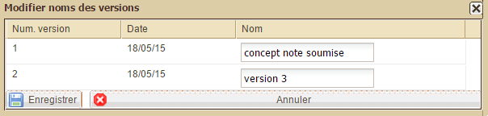
Lors d'une synchronisation : en se reconnectant après avoir travaillé en mode hors-ligne (voir 5.11.2 Comment synchroniser les données après avoir travaillé hors-ligne?), la base hors-ligne de données est automatiquement mise à jour en même temps que les modifications faites hors-ligne sont envoyées vers le serveur.
A tout moment : dans le menu de gestion du mode déconnecté (qui s'ouvre en survolant la prise connectée près du logo Sigmah), un bouton vous propose de mettre à jour votre base hors-ligne de données :
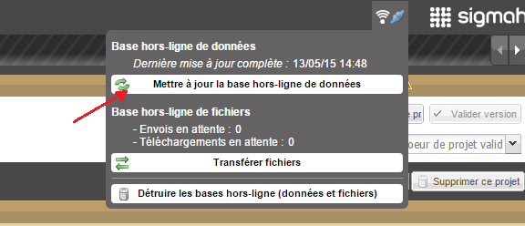
Une fois lancée la mise à jour de la base hors-ligne de donnes, une barre de progression vous indique que votre de base de données hors-ligne se met effectivement à jour :
Mettre à jour votre base hors-ligne de fichiers
Vous pouvez mettre à jour votre base hors-ligne de fichiers de deux manières :
Après une mise à jour de la base hors-ligne de données : une fois votre base hors-ligne de données mise à jour, une boîte de dialogue s'affiche automatiquement et vous propose de synchroniser votre base hors-ligne de fichiers. Cliquer sur "Oui" ouvrira alors la boîte de dialogue "Préparer le transfert de fichiers hors-ligne" :
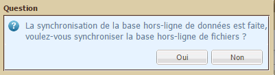
A tout moment : dans le menu de gestion du mode déconnecté (qui s'ouvre en survolant la prise connectée près du logo Sigmah), un bouton "Transférer les fichiers" vous permet également d'ouvrir la boîte de dialogue "Préparer le transfert de fichiers hors-ligne" :
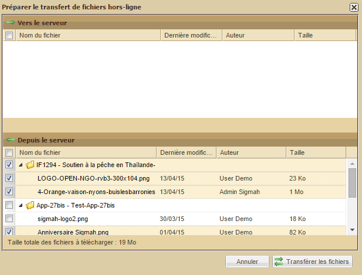
Cette boîte de dialogue "Préparer le transfert de fichiers hors-ligne" se manipule ainsi :
Dans la partie du haut, sélectionnez les fichiers que vous souhaitez transférer vers le serveur ;
Dans la partie du bas, sélectionnez les fichiers que vous souhaitez transférer depuis le serveur ;
Une fois la sélection de fichiers faite, cliquez sur le bouton "Transférer les fichiers" pour lancer le transfert.
Lorsqu'une connexion Internet est de nouveau disponible, un message de notification vous informe qu'une connexion à été détectée, et le marqueur graphique de détection d'une connexion Internet passe de sa forme  à sa forme
à sa forme  .
.
Vous pouvez désormais vous reconnecter à votre serveur Sigmah et synchroniser vos données pour à la fois (i) mettre en ligne le travail que vous avez effectué hors ligne, et (ii) recevoir le travail que vos collègues ont effectué lorsque vous étiez hors-ligne.
Pour se reconnecter, ouvrez le menu de gestion du mode déconnecté (en survolant avec votre curseur la prise connectée) et cliquez sur "Connecter & Synchroniser" :
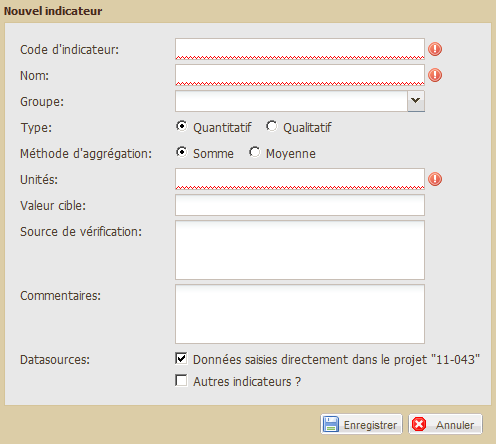
La fenêtre suivante vous informe alors de la progression en cours :

Une fois la synchronisation de la base hors-ligne de donnée effectuée, Sigmah repasse en mode connecté (prise reconnectée et fond orange rétabli en haut à gauche de l'écran) et une boîte de dialoague vous propose de synchroniser maintenant la base hors-ligne de fichiers. Cliquez sur "Oui" pour la synchroniser :

En cliquant sur oui, une barre de progression apparaît sous l'icône du mode déconnecté :
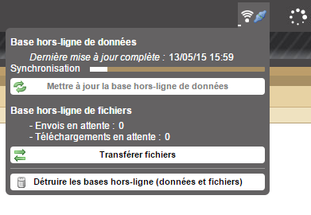
Pour des raisons de sécurité, afin de ne laisser aucune information sur un ordinateur qui a utilisé Sigmah, vous pouvez à tout moment détruire votre environnement hors-ligne.
En détruisant votre environnement hors-ligne, vous détruisez à la fois vos bases hors-ligne de données et de fichiers.
Pour détruire votre environnement hors-ligne, cliquez simplement sur le bouton "Détruire les bases hors-ligne (données et fichiers)" du menu de gestion du mode déconnecté :

Afin d'éviter la double saisie des données, vous pouvez importer des fichiers préformatés sous format OpenDocument Spreadsheet, MS Excel, ou CSV.
Pour être en mesure d'importer des données, des schémas d'importation doivent avoir été créés au préalable dans la partie Administration. Pour en savoir plus à ce sujet, voir Gestion des Schémas d'importation.
Deux modes d'import sont possibles dans Sigmah :
Import en masse
Contrôler chaque correspondance
L'import en masse est conçu pour importer de gros volumes de données, alors que le mode « Contrôler chaque correspondance » est conçu pour donner tout le contrôle dans le détail du processus. Pour des raisons de performance, le mode « Contrôler chaque correspondance » n'est pas recommandé si plus de 10 projets sont à importer.
Le processus d'import se déroule ainsi en jusqu'à 3 étapes clés :
Démarrer un nouvel import de données : pour choisir le fichier à importer, le schéma d'importation à utiliser, et les options de l'import en masse si ce mode d'import est choisi.
[pour le mode « Contrôler chaque correspondance »] Choisir les projets à modifier ou créer par cet import
[pour le mode « Contrôler chaque correspondance »] Choisir le détail des modifications faites sur chaque projet lors de l'import
1. Démarrer un nouvel import de données
Pour importer un nouveau fichier, cliquez sur le bouton "Importer" du Menu du Tableau de bord :

La boîte de dialogue suivante apparaît alors. Sélectionnez le schéma d'importation correspondant au format du fichier à importer, le fichier lui-même, et le mode d'import le plus adéquat.

Si vous sélectionnez le mode « Import en masse », il vous reste quelques paramètres à préciser avant de lancer l'import :
« Créer un projet si aucun projet correspondant n'est trouvé » : précise qu'il faut créer un projet à chaque fois qu'aucun projet correspondant n'est trouvé dans la base de Sigmah.
« Déverrouiller les fondamentaux de projet si nécessaire » : dans le cas où l'import doit amener à modifier un champ appartenant aux fondamentaux de projet, et si les fondamentaux de ce projet sont verrouillés, permet d'autoriser de déverrouillage de ces fondamentaux.
« Si plusieurs correspondances à un unique élément du fichier » propose enfin deux choix quand il y a une ambiguïté sur le projet à modifier en rapport à un élément du fichier à importer : soit « Toutes les mettres à jour » pour mettre à jour toutes les correspondances, soit « Mettre à jour aucune » pour ne faire dans ce type de situation aucune modification.
Cliquez enfin sur le bouton « Importer » pour lancer l'import.
2. Choisir les projets à modifier ou créer par cet import
Si vous êtes en mode d'import « Contrôler chaque correspondance », une seconde boîte de dialogue apparaît où vous pouvez sélectionner les projets que vous souhaitez modifier ou créer par cet import.
Chaque ligne du tableau affiché représente un projet à modifier ou à créer dans Sigmah en utilisant les données extraites du fichier à importer. Il y a autant de lignes dans le tableau que de projets susceptibles d'être modifiés ou créés dans chacun des modèles de projet associés au schéma d'importation sélectionné. Ainsi, si 3 modèles de projet sont associés au schéma d'importation sélectionné et que 5 projets sont décrits dans le fichier à importer, le tableau aura 15 lignes.
Ce tableau présente les colonnes suivantes :
Case à cocher : pour valider la modification décrite dans la ligne ;
Modèle : le modèle du projet qui serait modifié par la ligne ;
Variable utilisé pour l'identification : le nom et la valeur de la variable extraite du fichier à importer utilisée pour identifier le projet à modifier, ou qui sera utilisée pour créer le projet ;
Statut de l'import : informe si un projet a été trouvé pour la variable d'identification donnée, et si l'importation est prête ou non ;
Code : le code du projet trouvé comme correspondant et qui serait modifié par la ligne ;
Nom : le nom du projet trouvé comme correspondant et qui serait modifié par la ligne ;
Boutons (i)"Créer", (ii)"Déverrouiller fondamentaux" et (iii)"Confirmer les détails de l'import" : ces boutons permettent respectivement de (i) créer les nouveaux projets qui correspondent aux variables extraites du fichier, de (ii) déverrouiller les fondamentaux d'un projet qui devrait être modifié par l'import, et (iii) modifier et confirmer chacune des modifications que l'import ferait sur le projet qui serait modifié par la ligne.
(i) En cliquant sur le bouton "Créer", la boîte de dialogue pour la création d'un nouveau projet s'ouvre, préremplie avec les variables correspondantes extraites du fichier à importer.
(ii) En cliquant sur le bouton "Déverrouiller fondamentaux", les fondamentaux du projet identifié sur la ligne est déverouillé et le statut de l'import passe à "Projet trouvé et importation prête".
(iii) En cliquant sur le bouton "Confirmer les détails de l'import", cela ouvre une nouvelle boîte de dialogue permettant de choisir chacun des champs qui sera modifié ou non par l'import. Voir "3. Choisir le détail des modifications faites sur chaque projet lors de l'import".

Une fois les projets à modifier sélectionnés dans cette fenêtre (en cochant la case correspondante) et tous les détails de l'importation confirmés comme souhaité, cliquez sur le bouton "Importer" en bas à droite pour appliquer tous les changements demandés.
3. Choisir le détail des modifications faites sur chaque projet lors de l'import
Si vous êtes en mode d'import « Contrôler chaque correspondance », en cliquant sur le bouton "Confirmer les détails de l'import" pour une ligne avec un projet trouvé, cela ouvre une nouvelle boîte de dialogue permettant de choisir chacun des champs qui sera modifié ou non par l'import. Cette fenêtre liste tous les champs qui seraient modifiés en précisant à chaque fois :
le nom du champ ;
sa valeur actuelle ;
la nouvelle valeur qu'il aura si la modification est confirmée.
Cochez ou décochez les lignes de modifications pour ne garder cochées que celles que vous souhaitez voir appliquer, puis cliquez sur le bouton "OK" pour sauvegarder votre sélection et fermer la fenêtre.

La précédente fenêtre réapparaît alors. Pour finir votre import, terminez de sélectionner les projets que vous voulez modifier dans cette fenêtre qui vient de réapparaître et cliquez sur "Importer".
En fonction de la gravité du problème rencontré, voici trois types de solutions proposés :
1. Tout d’abord, si une information que vous venez de renseigner et d’enregistrer n’apparaît pas, vérifiez que vous avez bien actualisé votre navigateur (raccourci clavier : F5).
2. Si le problème persiste, vous pouvez en faire part aux développeurs de Sigmah en cliquant sur le lien « Signaler un dysfonctionnement » disponible en haut à droite de toutes les pages ouvertes au sein du logiciel.

3. Enfin, vous pouvez consulter des forums « Technical support » et « Feedbacks & suggestions » sur www.sigmah.org
La zone d’administration est un espace réservé aux utilisateurs ayant le droit de paramétrer le logiciel. On peut ouvrir la zone d'administration par un simple clic sur le bouton « Administration » situé en bas à gauche du Tableau de bord dans le composant Menu.

La zone d’administration permet de créer et modifier :
Pour en savoir plus sur le concept de modèles, voir la rubrique "Le « Modèle »".
Utilisateur
L’utilisateur est une personne physique autorisée à utiliser le logiciel Sigmah dans le cadre d’un usage institutionnel. Cela signifie que l’équipe projet à laquelle elle appartient (ou le référent Sigmah suivant le type d’organisation de l’institution) lui a octroyé des droits à cet effet, droits définis dans le cadre du paramétrage auquel l’utilisateur en question n’a pas nécessairement accès pour modification (voir Profils ci-dessous).
Dans le tableau Utilisateurs du sous-onglet Utilisateurs de l’écran d’Administration, un utilisateur est défini par 9 informations :
1. Nom
2. Prénom
3. Statut : un compte utilisateur peut être :
« actif » (c’est-à-dire que le compte de l’utilisateur a été créé et qu’il est utilisable par celui-ci)
ou « bloqué » (c’est-à-dire que le compte de l’utilisateur a été créé mais qu’il n’est pas utilisable par celui-ci)
4. E-mail
5. Langue d’invitation : anglais ou français
6. Zone de rattachement : zone d’intervention dont dépend l’utilisateur
7. Clé secrète
8. Dernier changement de mot de passe
9. Profils : voir ci-dessous
Profil
Le profil est l’ensemble des droits associés à un utilisateur en fonction des types d’autorisations qu’il possède et des groupes de confidentialités (voir ci-dessous) auxquels il appartient.
Ces autorisations (appelées « Permissions globales » dans le logiciel) sont les suivantes :
Lire projet : permet de consulter le contenu de projets attachés aux zones d’intervention auxquels l’utilisateur a accès
Modifier le contenu des champs de projet : permet de modifier le contenu des Phases et du sous-onglet "Détails" des projets attachés à des zones d’intervention auxquelles l’utilisateur a accès en écriture
Modifier contenu projets/phases clôturés : pour modifier tous les éléments d'un projet ou d'une phase même si il ou elle est clôturée
Supprimer fichier d'un projet : donne le droit de supprimer un fichier attaché sur le serveur par un utilisateur (pour supprimer les fichiers disponibles dans les sous-onglets « Rapports & documents »)
Changer de phase : droit de clôturer une phase de projet et d’activer la suivante
Lier 2 projets
Verrouiller fondamentaux de projet
Valider version de fondamentaux de projet
Voir cadre logique : donne le droit de voir le sous-onglet "Cadre logique"
Modifier cadre logique : droit de modifier le contenu du sous-onglet "Cadre logique"
Voir agenda : donne le droit de voir le sous-onglet "Agenda"
Modifier agenda : droit de modifier le contenu du sous-onglet "Agenda"
Voir indicateurs : donne le droit de voir les sous-onglets "Gestion indicateurs" et "Saisie indicateurs"
Gérer les indicateurs : droit de modifier le contenu du sous-onglet "Gestion indicateurs"
Modifier indicateurs : droit de modifier le contenu du sous-onglet "Saisie indicateurs"
Voir carte : donne le droit de voir le sous-onglet "Carte"
Gérer site principal : droit de définir et modifier la localisation du projet
Gérer les sites : droit de définir et modifier des sites de collecte d'indicateurs
Créer projet
Créer projet test
Supprimer projet
Autorisations sur les zones d'intervention
Modifier contenu champs zone d'intervention : permet de modifier le contenu du sous-onglet "Informations" des zones d’intervention auxquelles l’utilisateur a accès
Supprimer fichier d'une zone d'intervention
Voir agenda zone d'intervention : donne le droit de voir le sous-onglet "Agenda"
Modifier agenda zone d'intervention : droit de modifier le contenu du sous-onglet "Agenda"
Autorisations d'Administration
Accéder à l'administration : affiche le bouton "Administration" dans le menu de l'utilisateur sur son écran Tableau de bord, et permet d'accéder à l'écran correspondant
Gérer les utilisateurs : affiche l'élément "Utilisateurs" dans le menu de l'Administration, et permet d'accéder à l'écran correspondant
Gérer zones d'intervention : affiche l'élément "Zones d'intervention" dans le menu de l'Administration, et permet d'accéder à l'écran correspondant
Gérer modèles de projet : affiche l'élément "Modèles de projet" dans le menu de l'Administration, et permet d'accéder à l'écran correspondant
Gérer modèles zones d'intervention : affiche l'élément "Modèles zones d'intervention" dans le menu de l'Administration, et permet d'accéder à l'écran correspondant
Gérer modèles de rapport : affiche l'élément "Modèles de rapport" dans le menu de l'Administration, et permet d'accéder à l'écran correspondant
Gérer les catégories : affiche l'élément "Catégories" dans le menu de l'Administration, et permet d'accéder à l'écran correspondant
Gérer schémas d'importation : affiche l'élément "Schémas d'importation" dans le menu de l'Administration, et permet d'accéder à l'écran correspondant
Gérer paramètres : affiche l'élément "Paramètres" dans le menu de l'Administration, et permet d'accéder à l'écran correspondant
Autres autorisations
Modifier ses rappels
Modifier tous les rappels
Export global : affiche le bouton "Exporter tout" sur le tableau des projets du Tableau de bord, et active la fonctionnalité correspondante
Export vers HXL : fonctionnalité indisponible dans la v2.0
Changer son mot de passe
Importer données
Groupe de confidentialité
Un groupe de confidentialité est un ensemble de champs qui partagent la même confidentialité.
Un groupe « Sécurité » pourrait rassembler tous les champs traitant d’information sécuritaire par exemple, ou un groupe « RH » pourrait contenir toutes les informations d’évaluation et suivi des ressources humaines, etc.
Quand un champ est associé à un groupe de confidentialité, il devient par défaut invisible pour tous les utilisateurs. Mais ces groupes de confidentialité peuvent ensuite être associés à des utilisateurs via le lien défini entre ces groupes et des profils, pour permettre de donner accès aux champs dépendant de groups de confidentialité. Le lien entre un profil et un groupe de confidentialité est caractérisé par un niveau de droit :
Voir : permet de voir sans modifier le contenu du groupe de confidentialité pour les utilisateurs possédant le profil ;
Modifier : permet de voir et modifier le contenu du groupe de confidentialité pour les utilisateurs possédant le profil.
Si jamais un utilisateur a plusieurs profils, seuls seront conservés pour lui les droits les plus forts sur chaque groupe de confidentialité.
Tout champ de modèle de projet est composé de 8 caractéristiques dont les définitions sont les suivantes :
Nom : intitulé sous lequel le champ créé sera visible par les utilisateurs finaux
Type : format sous lequel devra être renseignée l’information (à choisir parmi une liste déroulante). Voir « Définitions des types associés à un champ de modèle de projet » pour plus de détails).
Conteneur : espace contenant un ensemble de groupes. D’une manière concrète, il s’agit pour un projet du sous-onglet « Détails » ou du bloc « Détails de la phase » pour une des phases du modèle de projet. Et pour un modèle de zone d’intervention, le conteneur est toujours le sous-onglet « Informations ».
Groupe : ensemble nommé de plusieurs champs.
Ordre : nombre indiquant la position d'affichage du champ par rapport aux autres champs du même groupe (astuce: donner comme valeur initiale à l'ordre 10, 20, 30, etc. pour pouvoir facilement déplacer ensuite un champ entre 2 autres (en donnant par exemple la valeur 15 à l'ordre d'un champ pour le placer entre le champ 10 et le champ 20))
Obligatoire : indique si le champ devra être nécessairement renseigné par l’utilisateur du projet ou s’il pourra rester sans réponse.
Groupes de confidentialité : permet de rendre accessible ou non le champ à certains groupes d’utilisateurs. Voir « Comment créer un groupe de confidentialité ? » pour plus de détails.
Appartient aux fondamentaux de projet : permet de définir si la modification du champ sera contrôlé par le système des « fondamentaux de projets ». Voir « 5.3 Comment faire une version de fondamentaux de projet ? » pour plus de détails.
Exportable : permet de définir si le champ doit être exporté ou non dans les feuilles de calcul de Synthèse de projet.
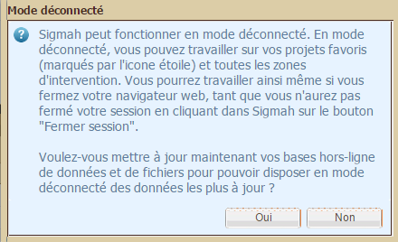
Dans le cadre des modèles de projet et de zone d’intervention, un type est le format sous lequel devra être renseignée l’information liée au champ en cours de création (voir "Comment éditer un modèle de projet qui vient d’être créé?" pour plus de détails). Ce format est à choisir parmi une liste déroulante qui s’affiche si l’on clique sur la flèche encadrée située à droite de la ligne :
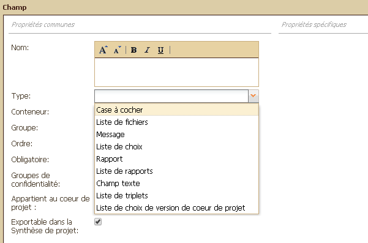
Ces différents types de champ proposés se définissent de la façon suivante :
Case à cocher : si par exemple un champ « Case à cocher » porte comme titre « Accord donné par le Conseil d’Administration pour lancer l’action » pour un modèle de projet, l’utilisateur verra dans le projet associé une case à cocher avec le texte « Accord donné par le Conseil d’Administration pour lancer l’action » à sa droite.
Champ date : champ demandant la saisie d'une date
Champ de calcul : affiche le résultat du calcul de la formule donnée dans sa définition
Champ nombre : pour la saisie d'un nombre, entier ou décimal
Champ paragraphe : un champ permettant de saisir un texte de plusieurs lignes
Champ texte : un champ permettant de saisir une ligne de texte
Liste de choix : la liste de choix peut être à choix unique ou à choix multiple.
Liste de choix de version de fondamentaux de projet : liste déroulante permettant à l'utilisateur de sélectionner une version de fondamentaux de projet parmi la liste de toutes les versions validées de fondamentaux de projet. Exemple d'utilisation : dans une phase de conception de projet, indiquer la version des fondamentaux de projet (titre projet, budget, date de fin, cadre logique...) sur laquelle la conception initiale s'est faite. Cela permet de forcer également de valider au moins une version de fondamentaux de projet dans les phases où un champ de ce type serait obligatoire. [Type de champ seulement disponible pour les modèles de projet, et indisponible pour les modèles de zone d'intervention] (pour plus de détails sur les fondamentaux de projet, voir "3.8. Les « fondamentaux de projet » et les versions de « fondamentaux de projet »")
Liste de contacts : champ permettant de stocker une liste de contacts mis en relation à un projet, zone ou contact. Ce type de champ est disponible pour les modèles de projet, d'unité organisationnelle, ou de contact. . Pour plus d’informations, voir « Le Contact ».
Liste de rapports : un groupe de plusieurs rapports (voir "Le « Rapport »")
Liste de fichiers : le nom du champ correspond alors au type de fichier attendu pour le projet ou la zone d’intervention. « Photos du projet » ou « Rapport de diagnostic » sont deux exemples de nom pour des champs Liste de fichiers.
Liste de triplets : champ permettant de collecter une liste d'ensembles à trois élements chacun en saisie libre : (i) code, (ii) nom, (iii) période
Message : une information qui sera affichée telle quelle à l’écran. Ce champ ne demande aucune information à l’utilisateur.
Rapport : un rapport unique (voir "Le « Rapport »")
fondamentauxfondamentauxfondamentauxfondamentauxfondamentauxfondamentauxfondamentauxfondamentaux
Par ailleurs, certains types impliquent des informations supplémentaires à renseigner dans la même boîte de dialogue.
Informations supplémentaires pour les champs « Liste de fichiers »
« Limite supérieure » correspond au nombre maximum de fichiers autorisés dans la liste.
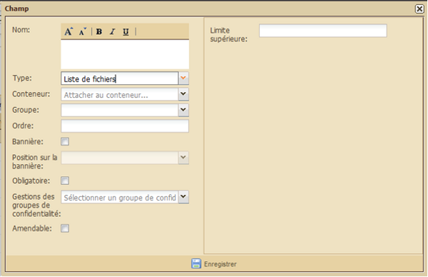
Informations supplémentaires pour les champs « Liste de choix »
Trois informations supplémentaires sont demandées pour les champs « Liste de choix » :
Choix multiple ? Si cochée, indique que plusieurs valeurs pourront être choisies dans la liste. Si pas cochée, indique qu’une unique valeur devra être choisie.
Catégorie liée : indique si les valeurs à choisir pour la liste de choix doivent faire partie ou non d’une Catégorie (voir "Une « Catégorie »" pour plus de détails)
Choix personnalisés : permet de définir librement les valeurs proposées par cette liste

Pour créer un choix personnalisé, inscrivez son nom dans le champ texte puis cliquez sur ajouter :
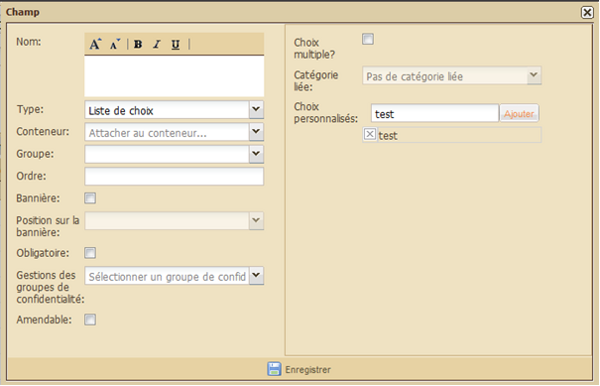
Le nouveau choix personnalisé apparaîtra alors sous le champ de texte.
Pour supprimer un choix, cliquer sur la croix à sa gauche.
Informations supplémentaires pour les champs « Rapport » et « Liste de rapports »
Pour un champ « Rapport » ou « Listes de rapport », la seule information supplémentaire est :
Nom du modèle de rapport : le modèle de rapport indique le format que devra suivre le rapport attaché à ce champ (exemple : « formulaire unique »).
Pour plus de détails, voir "Le « Rapport »" et "Gestion des modèles de rapport".

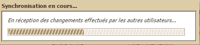
Informations supplémentaires pour les champs « Champ de calcul »
Formule : formule du calcul du résultat de ce champ de calcul, voir « Comment écrire une formule d'un champ de calcul ? ».
Code : code à donner au champ pour l'utiliser dans les formules des champs de calcul, car le résultat d'un champ de calcul peut être lui-même réutilisé dans d'autres champs de calcul.
Décimal ?: indique si la case est cochée que le nombre attendu est un nombre décimal à virgule. Si la case n’est pas cochée, le nombre attendu est un entier.
Limite inférieure et Limite supérieure : spécifie les valeurs minimum et maximum permises pour le résultat de la formule de ce champ de calcul.
Informations supplémentaires pour les champs « Champ date »
Limite inférieure et Limite supérieure : spécifie les valeurs minimum et maximum permises pour le champ
Informations supplémentaires pour les champs « Champ nombre »
Code : code à donner au champ pour l'utiliser dans les formules des champs de calcul.
Décimal ?: indique si la case est cochée que le nombre attendu est un nombre décimal à virgule. Si la case n’est pas cochée, le nombre attendu est un entier.
Limite inférieure et Limite supérieure : spécifie les valeurs minimum et maximum permises pour le champ
Informations supplémentaires pour les champs « Champ texte » et « Champ paragraphe »
Nombre de caractères : si le champ est de type « Paragraphe » ou « Champ texte », indique le nombre maximum de caractères autorisé pour le texte saisi.
Décimal ?: si le champ texte est de type « Nombre », indique si la case est cochée que le nombre attendu est un nombre décimal à virgule. Si la case n’est pas cochée, le nombre attendu est un entier.
Limite inférieure et Limite supérieure : si le champ texte est de type « Nombre » ou « Date », spécifie les valeurs minimum et maximum permises pour le champ
Informations supplémentaires pour les champs « Liste de contacts »
[Insérer capture d’écran]
Les champs de ce type ont plusieurs options de configuration :
• accepter des contacts uniquement d'un type spécifique (individu/organisation), ou d'un ou plusieurs modèle(s) de contact choisi(s) ;
• limiter le nombre de contacts qu'on peut ajouter dans la liste ; • permettre de créer des nouveaux contacts à partir du composant « liste de contacts », en précisant les modèles de contacts disponibles pour la création (tous les modèles sélectionnés par défaut) ;
• permettre d'importer un fichier de contacts pour ajouter des contacts dans la liste, en précisant les schémas d'importation utilisés ; • permettre d'exporter le contenu du champ ;
• si ce type de champ est utilisé dans un modèle de contact, une option supplémentaire est disponible à la configuration du champ si le champ est configuré pour n'accepter que des contacts de type « organisation » : « est membre »
Les formules d'un champ de calcul s'écrivent un peu à la manière d'une formule dans un tableur comme OpenDocument Spreadsheet ou MS Excel. Concrètement, il s'agit
Le "Projet test" est un projet créé à partir d'un modèle en statut "Brouillon".
Il permet de visualiser clairement à quoi ressemblera un projet crée à partir d'un modèle de projet encore en statut "Brouillon", avant de passer ce dernier au statut "Disponible".
Tant qu'il n'est pas lié à une zone d'intervention, le "Projet test" n'est visible que par son créateur .
Pour créer un Projet test :
Cliquez sur "Projet test" dans le Menu du Tableau de bord.

Entrez un Code, un Titre et choisissez votre modèle.
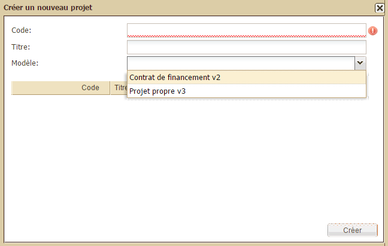
Cliquez sur "Créer", votre "Projet test" apparaît dans la tableau des projets du Tableau de bord.
La page Gestion des utilisateurs est composée de 3 blocs :
Utilisateurs : pour créer et modifier des comptes d’utilisateurs
Profils : pour créer et modifier des profils
Gestion des groupes de confidentialité : pour créer et modifier des groupes de confidentialité
Pour en savoir plus sur ces trois notions et notamment avoir la description de chacune des permissions globales à sélectionner dans les profils, voir "« Utilisateur », « Profil» et « Groupe de confidentialité »".
Le bloc « Utilisateurs » permet de réaliser 4 actions :
Bouton "Ajouter" : pour créer un compte utilisateur
Bouton "Désactiver/réactiver" : pour bloquer ou débloquer un compte utilisateur
Bouton "Recherche utilisateur" : pour accéder facilement à un utilisateur (critère de recherche = nom et email)
Bouton "Modifier" : pour modifier un compte d’utilisateur
Le bloc « Profils » permet de réaliser 3 actions :
Bouton "Ajouter profil" : pour créer un profil d’utilisateur
Bouton "Modifier" : pour modifier un profil d’utilisateur
Bouton "Supprimer" : pour supprimer un profil d'utilisateur
Le bloc « Gestion des groupes de confidentialité » permet de réaliser 3 actions :
Bouton "Ajouter" : pour créer un groupe de confidentialité
Bouton "Modifier" : pour modifier un groupe de confidentialité
Bouton "Supprimer" : pour supprimer un groupe de confidentialité
N.B. : Le contenu de chacun des blocs Utilisateurs et Profils peut être rafraîchi au fil des modifications apportées par un simple clic sur le bouton Actualiser situé à droite de la barre d’outils.
Le bloc Utilisateurs permet d’ajouter des utilisateurs (un à la fois). Pour cela, cliquez sur le bouton « Ajouter Utilisateur » situé sous le titre du bloc.

S’ouvre alors une boîte de dialogue intitulée « Nouvel utilisateur » :
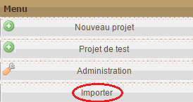
Renseignez alors les champs indiqués :
Nom :
Prénom :
E-mail :
Langue d’invitation : choix entre anglais, français et espagnol dans la liste déroulante
Zone de rattachement : choix parmi toutes les zones d’intervention existantes proposées dans la liste déroulante
Profils : choix parmi tous les profils existants proposés dans la liste déroulante
Le bloc Utilisateurs permet de désactiver (et/ou réactiver) un compte d’utilisateur (un à la fois). Pour cela, cliquez sur le bouton « Désactiver/Réactiver » situé sous le titre du bloc à droite du bouton « Ajouter Utilisateur » :
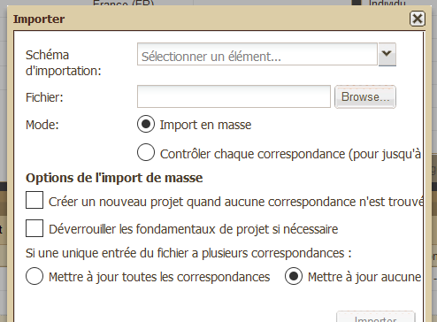
Si le tableau compte plusieurs utilisateurs, sélectionnez avec un simple clic la ligne de l’utilisateur que vous souhaitez modifier puis cliquez sur « Désactiver/Réactiver »
Si le statut du tableau des utilisateurs indiquait « Actif », il affiche désormais « Bloqué » :

Pour réactiver le compte de l’utilisateur souhaité, cliquez à nouveau sur « Désactiver/Réactiver ».
Le bloc Utilisateurs permet de rechercher un utilisateur à partir de son nom ou de son adresse électronique. Pour cela, renseignez le champ de texte situé à droite de l’intitulé « Recherche utilisateur » :

Le bloc Utilisateurs permet de modifier un compte d’utilisateur. Pour cela, cliquez dans la dernière colonne à droite de la ligne qui vous intéresse sur le bouton « Modifier » :

Apparaît alors une boîte de dialogue présentant les différentes informations associées à cet utilisateur :

Procédez aux modifications souhaitées puis cliquez sur enregistrer. Apparaît alors en bas à droite de l’écran un message de confirmation.
Le bloc Profil permet de créer un nouveau profil d’utilisateur. Pour cela, cliquez sur le bouton « Ajouter profil » situé sous l’intitulé du bloc :
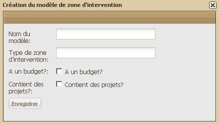
Apparaît alors une boîte de dialogue permettant de nommer le nouveau profil, de sélectionner ses types d’autorisation et de sélectionner ses groupes de confidentialité :

Cliquez sur Enregistrer en bas à gauche pour sauvegarder les informations renseignées. Apparaît alors en bas à droite de l’écran un message de confirmation.
Pour modifier un profil d’utilisateur, cliquez sur le bouton « Modifier » situé dans la dernière colonne à droite de la ligne qui vous intéresse :

Apparaît alors une boîte de dialogue permettant de modifier les informations du profil sélectionné :

Une fois les modifications enregistrées apparaît en bas à droite de l’écran un message de confirmation.
La version 2.2 du logiciel offre la possibilité de gérer de nouvelles fonctionnalités :
- les groupes itératifs.
- la gestion de contacts : de nouvelles permissions globales sont disponibles. Il est désormais possible d’autoriser les utilisateurs à :
- voir les contacts en relation avec mes zones d'intervention visibles ;
- de donner le droit de voir tous les contacts qui sont liés à un projet ou une zone dépendant de la zone de rattachement de l'utilisateur ;
- donner le droit de voir tous les contacts
- modifier et exporter tous les contacts ;
- modifier contacts en relation avec mes zones d'intervention visibles ;
D’importer des contacts et de supprimer des contacts.
- autoriser le suivi des performances du logiciel :
- le sous-onglet équipe :
Pour créer un groupe de confidentialité, cliquez sur le bouton « Ajouter » situé sous l’intitulé du bloc :

Apparaît alors une boîte de dialogue avec des champs à renseigner :

Une fois les champs renseignés, cliquez sur le bouton « Enregistrer » situé en bas à gauche. Apparaît alors un message de confirmation en bas à droite de votre écran.
Pour modifier un groupe de confidentialité, cliquez sur le bouton « Modifier » situé dans la dernière colonne à droite de la ligne qui vous intéresse.
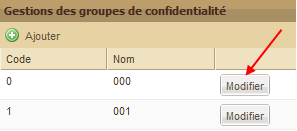
Apparaît alors une boîte de dialogue avec des champs à renseigner :
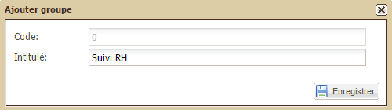
Une fois les champs modifiés, cliquez sur le bouton « Enregistrer » situé en bas à gauche. Apparaît alors un message de confirmation en bas à droite de votre écran.
Une nouvelle boîte de dialogue apparaît afin d’actualiser la colonne Groupes de confidentialité du Bloc Profils où les éléments précédemment modifiés sont également associés :
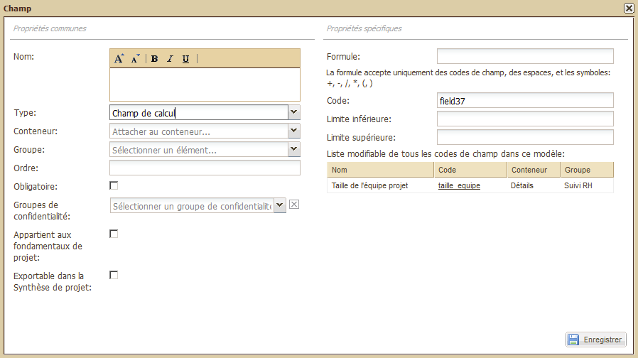
Cliquez sur « oui ».
Composée d’un seul bloc, la page « Gestion des zones d’intervention » permet de créer des zones d’intervention - sur la base des modèles de zones d’intervention – ainsi que de modifier ou supprimer celles déjà créées. (Pour plus de détails sur les modèles de zones d’intervention, voir la définition de la « Zone d’intervention ».

Le tableau des zones d’intervention propose 5 boutons situés sous son titre:
« Déplier tout »
« Replier tout »
N. B. : Pour plus d’informations sur les boutons « Déplier tout » et Replier tout », voir la rubrique « Déplier/replier toutes les zones d’intervention » dans « Tableau des zones d’intervention » (Pour une meilleure navigation à l’intérieur des dossiers, voir dans cette même page la rubrique : « Ouvrir/fermer une zone contenant des sous-zones ».)
Ce tableau est composé de 5 colonnes :
Case à cocher : pour sélectionner la ligne et éventuellement les sous-zones qui la constituent. Il est à noter que la première case à cocher située au niveau des intitulés de colonnes permet de sélectionner l’ensemble des zones et sous-zones du tableau.
Code
Titre
Pays
Modèle
Créer une zone d’intervention
Pour ajouter une zone d’intervention, sélectionnez la ligne correspondant à la zone dans laquelle vous souhaitez créer la nouvelle zone puis cliquez sur le bouton « Ajouter » :
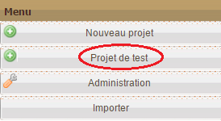
Apparaît alors une boîte de dialogue :

Renseignez les champs demandés puis cliquez sur le bouton « Créer ».
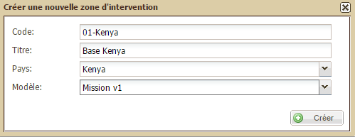
La nouvelle zone est créée et apparaît dans le tableau automatiquement mis à jour.

Déplacer une zone d’intervention
Pour déplacer une zone d’intervention, sélectionnez la ligne correspondant à la zone que vous souhaitez déplacer puis cliquez sur le bouton « Déplacer ».

Apparaît alors une boîte de dialogue :

Sélectionnez dans la liste déroulante le nouvel emplacement souhaité pour la zone d’intervention puis cliquez sur le bouton « Déplacer ».

La zone est déplacée et apparaît dans le tableau automatiquement mis à jour.
Supprimer une zone d’intervention
Pour supprimer une zone d’intervention, sélectionnez la ligne correspondant à la zone que vous souhaitez supprimer puis cliquez sur le bouton « Supprimer ».
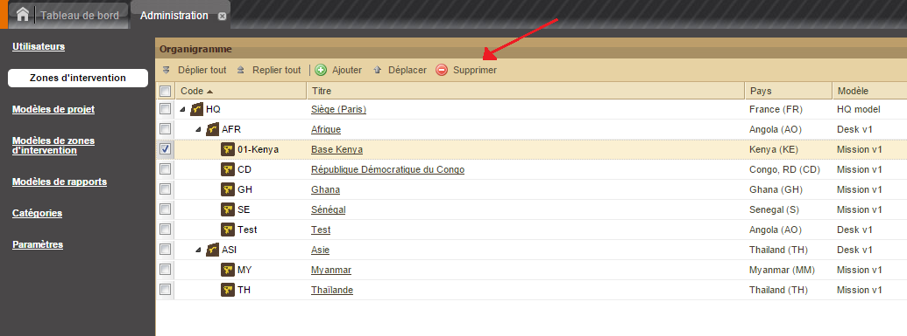
Apparaît alors une boîte de dialogue :

Pour confirmer la suppression cliquez sur Oui, pour l’annuler cliquez sur Non. Si vous avez confirmé la suppression, le tableau est alors automatiquement mis à jour.
Attacher un utilisateur à plusieurs zone d’intervention :
Il est possible d’attribuer plusieurs zones d’intervention à un même utilisateur. Ces zones d’intervention seront partagées en deux catégories : une zone d’intervention principale, et des zones d’intervention « classique ».
Expliquer le fonctionnement de l’option et l’administration des zones d’intervention multiples pour un même utilisateur (captures d’écran à l’appui)
La page Gestion des modèles permet de créer et modifier des modèles de projet :
- pour plus de détails sur le concept de modèle, voir « Le "Modèle" »,
- pour plus de détails sur le concept de projet, voir « Le "Projet" ».
Cette page est composée d’un seul bloc :
- à gauche, la liste des modèles,
- à droite, la fenêtre propre au modèle sélectionné dans le bloc de gauche.
Pour agrandir la fenêtre de droite propre à un modèle, il suffit de cliquer une fois sur le double-chevron situé en haut à droite de la liste des modèles.
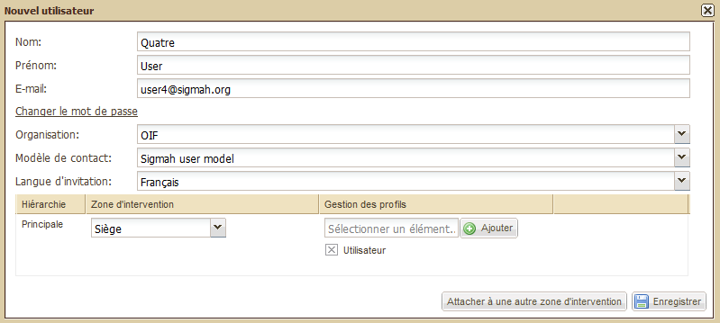
Pour voir de nouveau la liste des modèles, il suffit de cliquer une fois sur le double-chevron.

Pour créer un modèle de projet, cliquez sur le bouton « Ajouter » situé sous l’onglet Administration :

Apparaît alors une boîte de dialogue :

Nommez le modèle de projet puis sélectionnez un type de modèle de projet parmi les trois proposés (Projet propre, projet de financement, projet partenaire local) en cliquant sur le bouton situé entre les icones de modèle et leur intitulé. Cliquez sur « Enregistrer ». Apparaît alors un message de confirmation.
Votre modèle de projet s’ajoute alors en bas de la liste des modèles déjà existants.
Une fois votre modèle de projet créé, il faut l’éditer, c’est-à-dire le doter de caractéristiques spécifiques. Pour cela, cliquez sur le nom souligné du modèle de projet qui vous intéresse. S’il vient d’être créé, il apparaît par défaut en Etat « Brouillon » (par opposition à « Utilisé ») dans la liste des modèles existants.

Le modèle de projet sélectionné s'ouvre dans le bloc de droite.
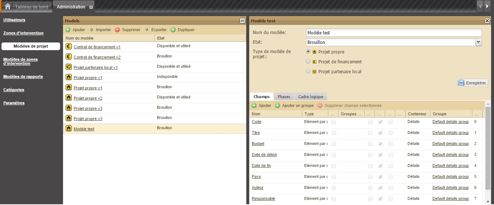
Cette page d’édition est composée de deux parties :
Dans la partie supérieure, le récapitulatif des informations déjà renseignées (nom du modèle de projet, Etat et type de projet) + un bouton « Enregistrer »
Dans la partie inférieure, le tableau d’édition lui-même composé de 3 onglets (Champs, Phases, Cadre logique). Par défaut, ce tableau d’édition s’ouvre sur le premier onglet (Champs)
Cette partie permet de modifier 4 informations sur le modèle :
Le nom du modèle
L’état du modèle :
Brouillon : le modèle sera invisible pour les utilisateurs finaux, seuls des projets de test pourront être créés à partir de lui ;
Disponible : le modèle sera visible pour les utilisateurs finaux qui pourront ainsi le sélectionner pour créer de nouveaux projets ;
Indisponible : après avoir été utilisé, le modèle est rendu de nouveau invisible pour les utilisateurs finaux : aucun nouveau projet ne pourra être créé à partir de lui ;
Le type du modèle (Projet propre, Projet de financement, Projet partenaire local)
Son mode "En maintenance" : pour en savoir plus à ce sujet, consulter "Comment modifier un modèle de projet disponible et utilisé ?".
Après avoir modifié l’une de ces informations, il est nécessaire de cliquer sur le bouton « Enregistrer » pour conserver les modifications.
NB: Ce bouton « Enregistrer » sert uniquement à enregistrer les modifications de la partie supérieure de l'écran. Pour la partie inférieure, toutes les modifications sont sauvegardées grâce aux boutons d'action ou dans les boîtes de dialogue.
Cette partie est composée des 4 onglets suivants :
Champs : permet de spécifier les informations qui seront à renseigner soit dans le sous-onglet « Détails » du projet, soit dans le sous-onglet « Détails de la phase » du/des projet(s) à partir de ce modèle
Phases : permet de spécifier le nombre, les noms et l’organisation des phases qui seront à renseigner dans le Tableau de gestion
Cadre logique : permet de spécifier les caractéristiques du cadre logique qui sera à renseigner dans le sous-onglet Cadre logique des projets
Schémas d'importation : permet de configurer des associations entre des schémas d'importation et ce modèle de projet
L’onglet « Champs » est composé d’une barre d’outils et d’un tableau :
Le tableau est composé de 11 colonnes qui sont autant de caractéristiques pour chaque champ :
Nom,
Type,
Obligatoire,
Groupes de confidentialité,
Appartient aux fondamentaux de projet,
Exportable dans la synthèse de projet,
Bannière,
Position sur la bannière,
Conteneur,
Groupe
Ordre dans le groupe
Les champs par défaut
Juste après la création d’un nouveau modèle de projet, ce tableau est déjà rempli avec les 9 champs par défaut suivants (qui font autant de lignes) :
Code,
Titre,
Budget,
Date de début,
Date de fin,
Pays,
Auteur,
Responsable,
Zone d’intervention
Parmi les 11 caractéristiques (colonnes) dans le tableau d’édition, la deuxième (« Type ») est déjà renseignée avec l’information « Elément par défaut ». Ce paramétrage, qui ne peut en aucun cas être modifié, signifie que ce champ sera présent avec l’intitulé qui lui correspond (Code, Titre, Pays, etc.) dans tous les projets créés quelque soit leur modèle et quelque soit le type de projet (propre, de financement, partenaire local).
Comment éditer les champs par défaut d’un modèle de projet ?
Pour paramétrer chaque champ proposé par défaut, cliquez sur son nom. S’ouvre alors une boîte de dialogue spécifique pour chaque champ.
Exemple pour le champ Code :

Pour chaque boîte de dialogue, une fois les informations renseignées, cliquez sur le bouton « Enregistrer » situé en bas à droite. Apparaît alors un message de confirmation.
Un autre type d’information est directement accessible depuis le tableau d’édition. Il s’agit de « Groupe » situé dans l'avant dernière colonne. En cliquant sur son nom, apparaît alors une boîte de dialogue :

Renseignez les champs demandés (Nom, Conteneur, Position verticale) puis enregistrez. Apparaît alors un message de confirmation.
Comment éditer un champ au sein d’un modèle de projet ?
Les caractéristiques présentées ci-dessous correspondent aux colonnes du tableau d’édition. (Voir « Comment éditer un modèle de projet qui vient d’être créé ?Définitions des types associés à un champ de modèle de projet ».) :
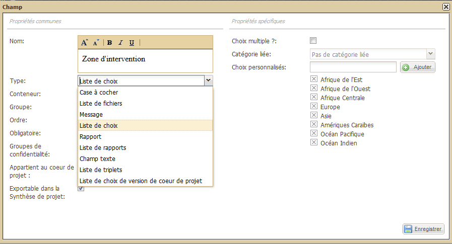
Conteneur : correspond à l’emplacement où il sera possible de renseigner ce champ. L’emplacement du conteneur est à choisir parmi une liste déroulante qui s’affiche si l’on clique sur la flèche encadrée située à droite de la ligne. Apparaît alors la liste suivante (Détails, Default root phase) :
Groupe : correspond à l’emplacement où il sera possible de renseigner ce champ. Le groupe est à choisir parmi la liste des groupes disponibles pour ce conteneur.
Obligatoire : indique si le champ devra être nécessairement renseigné par l’utilisateur du projet ou s’il pourra rester sans réponse. Pour le rendre obligatoire, cliquez sur la case à cocher qui lui correspond.

Groupes de confidentialité : permet de rendre accessible ou non un champ à certains groupes d’utilisateurs. Voir « Comment créer un groupe de confidentialité ? » pour plus de détails). Le groupe de confidentialité associé à un nouveau champ est à choisir parmi une liste déroulante qui s’affiche si l’on clique sur la flèche encadrée située à droite de la ligne :

Appartient aux fondamentaux de projet: permet de définir si le champ sera inclus dans les fondamentaux de projet pour ce modèle (pour plus de détails, voir la définition des « fondamentaux de projet » et des versions de « fondamentaux de projet »). Un champ qui fait partie des fondamentaux de projet sera verrouillé si les fondamentaux de projet est verrouillé, et sa valeur sera affichée dans la fenêtre de comparaison des versions de fondamentaux de projet. Pour faire appartenir un champ aux fondamentaux de projet, cliquez sur la case à cocher correspondante.
Exportable dans la synthèse de projet : permet de définir si le champ doit être exporté ou non dans la synthèse de projet (feuille de calcul au format OpenDocument ou MS Excel). Si vous cochez cette case, le champ sera exporté pour tous les utilisateurs. Par conséquent, les champs qui doivent rester totalement privés ne devraient pas être exportés. Cette case est uniquement liée à la Synthèse de projet, et n'a aucun rapport avec les Exports généraux : vous pouvez ne pas exporter un champ ici, et décider par la suite de l'inclure dans un Export général via l'écran de configuration des exports généraux si vous avez le droit "Export général". Le paramètre "Export dans la Synthèse de projet" est disponible pour tous types de champs, sauf les champs Fichier et Rapports.
N.B. : Enregistrement des informations renseignées
Au terme du remplissage de vos informations, n’oubliez pas de cliquez sur Enregistrer. Un message de confirmation apparaîtra alors.
Par ailleurs, si vous n’avez pas renseigné tous les champs du formulaire, un message d’erreur vous en avertira :
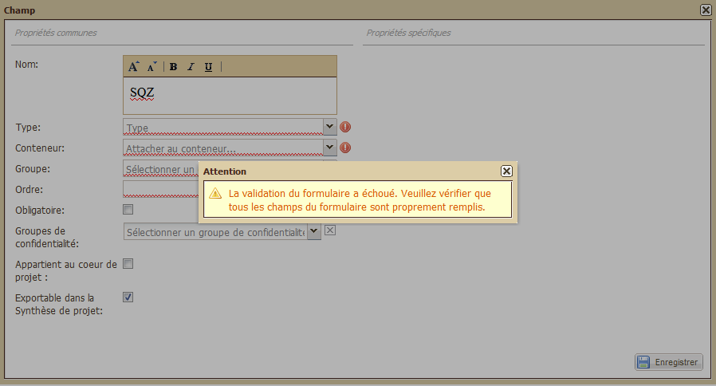
Pour plus de détails sur les 11 caractéristiques d’un champ, voir « Les champs d’un modèle de projet » et « Définitions des types associés à un champ de modèle de projet ».
Champ de calcul
[Insérer screenshot de l’écran computation field] Par ex :
Dans les propriétés spécifiques de chaque zone, il est nécessaire de renseigner le code spécifique à chaque zone (par exemple : field001, field002, etc.). La numérotation des zones se fait selon leur ordre de création. Une liste des codes est disponible pour aider l’administrateur à identifier les codes relatifs à chaque zone. Une fois le code entré, le système vérifie sa validité. SI le code ne correspond, il sera automatiquement refusé.
Il est possible de supprimer les computation fields...
Explication du fonctionnement du computation field : utilité, code à renseigner par zone,
Expliquer processus de suppression des computation fields.
Comment créer un groupe de champs au sein d’un modèle de projet ?
Cliquez sur le bouton « Ajouter un groupe » situé sous l’onglet « Champs » à droite du bouton « Ajouter ». S’ouvre alors une boîte de dialogue :

Renseignez les champs suivants :
Nom : intitulé sous lequel le groupe créé sera visible par les utilisateurs finaux.
Conteneur : emplacement au sein duquel sera contenu le groupe
Position verticale : indique la position verticale du groupe dans le conteneur, permettant ainsi de choisir l’ordre d’affichage des groupes.
Parler ici de la création de groupes itératifs
Il est possible de créer des groupes d'itérations dans les modèles de projet, de zone ou de contact.Comment créer des groupes itératifs : il est désormais possible de « créer une nouvelle itération de groupe » afin de permettre de limiter ce droit par exemple à des utilisateurs qui auront la permission de déclarer une nouvelle formation et/ou un nouveau bilan annuel
Apparaît alors un message de confirmation.
Comment supprimer un champ ?
Pour supprimer un champ :
Cliquez sur la ligne du champ à supprimer pour le sélectionner;
Cliquez ensuite sur le bouton "Supprimer les champs sélectionnés";
Cliquez sur "oui" pour valider votre choix, sur "non" pour annuler.
L’onglet « Phases » propose par défaut :
un bouton « Ajouter »
un tableau composé de 4 colonnes :
Ordre d’affichage,
Nom de la phase,
Phases suivantes
Guide de la phase

Comment modifier une phase au sein d’un modèle de projet ?
Cliquez sur le nom de la phase à modifier. Apparaît alors la boîte de dialogue suivante :
Renseignez les champs suivants :
Nom de la phase : intitulé de la phase tel qu’il sera visible par l’utilisateur final dans le tableau de gestion.
Phases suivantes : lorsque plusieurs phases sont disponibles, permet de définir quelles sont les phases qui doivent suivre directement la phase en cours de modification (Ne pas indiquer toutes les phases qui suivent directement ou non cette phase, mais seulement la ou les phases qui la suivent directement. Généralement, il n’y a qu’une unique phase suivante).
Phase initiale ? Cochez cette case si vous souhaitez que la phase que vous renseignez soit la phase donnée au projet à sa création.
Ordre : ordre d’affichage des onglets de phase dans le tableau de gestion.
Guide de la phase : une adresse web (une URL) vers laquelle l’utiliseur sera redirigé lorsqu’il cliquera sur le bouton « Guide de la phase » pour la phase concernée
Comment créer une nouvelle phase au sein d’un modèle de projet ?
Cliquez sur le bouton « Ajouter » situé sous l’onglet Phases. Apparaît alors la boîte de dialogue suivante :
Voir « Comment modifier une phase au sein d'un modèle de projet ? » pour plus de détails sur les champs à renseigner.
L’onglet « Cadre logique » propose :
un bouton « Enregistrer »,
un champ « Nom du cadre logique »
un tableau composé de 4 rubriques :
Objectifs spécifiques,
Activités,
Résultats attendus,
Pré-requis
Chacune de ces 4 rubriques est elle-même composée de plusieurs champs.
Pour accéder aux 3 dernières rubriques, il est nécessaire d’utiliser l’ascenseur prévu à cet effet sur la droite du menu :

N. B. : Chacune des informations à renseigner dans cette page sera visible par l’utilisateur final dans le sous-onglet Cadre logique d’un projet quelque soit son modèle et son type.
Comment éditer le modèle de cadre logique d’un modèle de projet ?
Il vous est tout d’abord possible de modifier le nom du cadre logique proposé par défaut « Default log frame ». Pour cela, effacez-le en écrivant le nom de votre choix à la place.
De même, pour la suite, des propositions vous sont toujours spécifiées par défaut pour chacun des champs des 4 rubriques sur la base du standard le plus commun du cadre logique (à savoir un tableau composé de 4 colonnes - non modifiables ici - et d’un nombre maximum de lignes et de groupes – ici, limité à 3 par défaut pour chaque rubrique, sauf exception précisée ci-dessous).
Voici la liste des éléments modifiables par rubrique :
1. Objectifs spécifiques (OS) :
Nombre maximum d’OS :
Utiliser des groupes d’OS ?
Nombre maximum de groupes d’OS ?
Nombre maximum d’A par groupe :
2. Activités (A) :
Nombre maximum d'A:
Nombre maximum de groupe d'A:
Nombre maximum d'A par RA:
Utiliser des groupes d'A ? (question oui/non avec "oui" comme réponse par défaut)
Nombre maximum d'A par groupe:
3. Résultats Attendus (RA) :
Nombre maximum de RA:
Nombre maximum de groupe de RA:
Nombre maximum de RA par OS :
Utiliser des groupes de RA ? (question oui/non avec "oui" comme réponse par défaut)
Nombre maximum de RA par groupe:
4. Pré-requis (P) :
Nombre maximum de P:
Nombre maximum de groupe de P:
Nombre maximum de P par groupe:
Utiliser des groupes de P ? (question oui/non avec "oui" comme réponse par défaut)
L'onglet "Schémas d'importation" vous permet d'associer des schémas d'importation à votre modèle de projet. Pour en savoir plus sur les schémas d'importation, voir Gestion des Schémas d'importation.
Une association entre un schéma d'importation et un modèle de projet est un ensemble de règles de correspondance entre des champs du modèle de projet et des variables extraites du schéma d'importation.
Associer un schéma d'importation à un modèle de projet
Pour associer un schéma d'importation à un modèle de projet, cliquez sur le bouton "Ajouter" dans la partie gauche de l'onglet "Schémas d'importation".
Sélectionnez le schéma d'importation souhaité parmi la liste de tous les schémas d'importation qui ont été créés, puis cliquez sur "Enregistrer". Le nom du schéma d'importation s'ajoute alors dans la liste à gauche, et la fenêtre suivante vous invite à définir votre règle d'identification :
La règle d'identification est la règle mettant en correspondance un champ du projet et une variable extraite du schéma d'importation ; elle permet d'identifier le projet extrait à un projet dérivé du modèle de projet.
Pour définir la règle d'identification, sélectionnez un champ et une variable puis cliquez sur "Enregistrer".
Votre règle apparaît alors dans la partie droite de l'onglet "Schémas d'importation", et on peut la distinguer comme règle d'identification par l'icône de clé qui précède le nom du champ :

Ajouter une règle de correspondance
Pour ajouter de nouvelles règles de correspondance, cliquez sur le bouton "Ajouter" dans la partie droite de l'écran. Cela ouvrira la boîte de dialogue suivante :
Pour terminer de définir la règle de correspondance, sélectionnez un champ et une variable puis cliquez sur "Enregistrer".
Supprimer une règle de correspondance
Pour supprimer une règle de correspondance, cliquez sur la ligne d'une règle dans la partie droite de l'écran pour la sélectionner, et cliquez ensuite sur le bouton "Supprimer" de la partie droite de l'écran.
Supprimer une association avec un schéma d'importation
Pour supprimer une association avec un schéma d'importation, cliquez sur la ligne du schéma d'importation correspondant dans la partie gauche de l'écran pour le sélectionner, et cliquez ensuite sur le bouton "Supprimer" de la partie gauche de l'écran.
Pour modifier un modèle de projet en statut "Disponible et utilisé", Sigmah propose un mode de "maintenance" pour vos modèles de projet. Pendant une période de "maintenance", de nombreuses modifications du modèle de projet deviennent temporairement permises, comme l'ajout ou la désactivation de champ. Et pendant qu'un modèle de projet est en maintenance, il n'est pas possible de modifier le contenu des projets qui en sont dérivés.
Programmer une période de maintenance pour un modèle de projet
Définir une période de maintenance en amont permet d'informer les utilisateurs à l'avance que leur projet sera temporairement non-modifiable à partir de la date et de l'heure indiquées. Il est néanmoins possible de programmer une période de maintenance de sorte qu'elle démarre tout de suite en choisissant une date/heure de début antérieure à l'instant présent.
Pour programmer une période de maintenance, il faut se rendre dans la partie Administration et cliquer à gauche sur la rubrique "Modèles de projet". Sélectionnez ensuite le projet qui vous intéresse. S'ouvre alors sur la droite un bloc propre à celui-ci dans lequel il vous faut cocher la case "En maintenance" (3e champ) :

Apparaissent alors deux champs sur la droite pour définir le jour et l'heure du début de votre période de maintenance pour modification. Choisissez le jour et l'heure qui vous conviennent et cliquez en bas à droite sur "Enregistrer" :
Un message d'information vous informe alors que votre mise à jour a été correctement effectuée.
Modifier un modèle de projet "en maintenance"
Une fois que la période de maintenance d'un modèle de projet a démarré, son onglet "Champs" rend disponible de nouvelles actions comme "Activer les champs sélectionnés" et "Désactiver les champs sélectionnés" :

Voici la liste exhaustive des actions autorisées sur un modèle de projet en maintenance :
Ajouter des champs
Ajouter des groupes
Supprimer des groupes vides
Désactiver ou réactiver des champs
Renommer des champs ou des groupes
Augmenter les limites des champs (exemple : augmenter le nombre de fichiers autorisés pour un champ "Liste de fichiers")
Déplacer un champ dans le même conteneur
Changer le statut "obligatoire" d'un champ
Modifier le contenu de la bannière de projet
Changer les paramètres du modèle de cadre logique
Arrêter la période de maintenance d'un modèle de projet
Pour arrêter la période de maintenance d'un modèle de projet, il suffit de décocher la case à cocher devant "En maintenance" dans la partie supérieure de l'écran de gestion d'un modèle de projet, puis cliquez sur le bouton "Enregistrer".
Cliquez sur le bouton "Importer" situé en haut à gauche du tableau. S'ouvre alors une boîte de dialogue. Cliquez sur "Browse" :

S'ouvre alors une boîte d'enregistrement de votre ordinateur. Sélectionnez un fichier (.dat) puis cliquez sur "Ouvrir" :

Le fichier apparaît alors dans la boîte de dialogue précédente. Sélectionnez ensuite un type de modèle de projet à l'aide de la liste déroulante puis cliquez sur "Ok" :
Le modèle de projet est importé et apparaît alors dans la liste automatiquement mise à jour.
Cliquez sur le bouton "Supprimer" situé à droite du modèle que vous souhaitez supprimer. Apparaît alors une boîte de dialogue :

Cliquez sur "Oui". Le modèle de projet est supprimé et la liste automatiquement mise à jour.
Cliquez sur le bouton "Exporter" situé à droite sur la ligne du projet de votre choix. Apparaît alors une boîte de dialogue. Cliquez sur Ok.
Apparaît alors une boîte d'enregistrement de votre ordinateur
Cliquez sur "Enregistrez".
Cliquez sur le bouton "Dupliquer" situé à droite du modèle que vous souhaitez dupliquer.
Apparaît alors un message de confirmation en bas à droite de votre écran. Le modèle dupliqué s'affiche alors automatiquement en bas de la liste de modèles de projet qui est automatiquement mise à jour.
Composée d’un seul bloc, la page Gestion des modèles de zones d’intervention permet de créer et modifier des modèles de zones d’intervention.
Pour plus de détails sur le concept de modèle, voir « "Modèle" ».
Pour plus de détails sur le concept de zone d’intervention, voir « La "Zone d’intervention" ».
La gestion des modèles de zones d'intervention fonctionne de manière similaire à la gestion des modèles de projets. Voir 6.4 Gestion des modèles de projet pour éditer, modifier, importer, supprimer, exporter ou dupliquer un modèle de zone d'intervention.
Pour créer un modèle de zone d’intervention, cliquez sur le bouton « Ajouter » situé sous l’onglet Administration :

Apparaît alors une boîte de dialogue :
Renseignez les champs suivants :
Nom du modèle : nom à donner au modèle pour le manipuler dans la page de gestion des modèles de zones d’intervention. Ce nom ne sera jamais visible par l’utilisateur final. Exemple : « Modèle de Mission v2 »
Type de la zone : nom générique que l’organisation veut donner à toutes les zones créées à partir de ce modèle.Exemple : si le type de zone pour un modèle est « Mission », et une zone créée à partir de ce modèle a pour nom « Haïti », l’utilisateur final verra à son écran « Mission Haïti ».
A un budget ? : indique si les zones créées à partir de ce modèle pourront avoir un budget ou non.
Contient des projets ?: indique si les zones créées à partir de ce modèle pourront avoir des projets attachés ou non.
Cliquez enfin sur le bouton « Enregistrer » situé en bas à gauche. Apparaît alors un message de confirmation.
Tout contact doit être créé à partir d’un modèle de contact existant. L‘administrateur peut créer autant de modèle qu’il le souhaite. Il peut être de deux types : « individu » ou « organisation ».
Chaque modèle de contact peut avoir autant de champs que désiré, et ces champs peuvent être de tous les types disponibles pour les modèles de projet et modèles d'unité organisationnelle, et être également associés avec des groupes de confidentialité.
Expliquer :
- la présentation de la page
- le fonctionnement de la page
- comment expliquer l’ajout/la suppression des différents champs d’information
- les liens avec les schémas d'importation, en référence avec les modèles de projet
[Intégrer capture d’écran de l’écran de gestion pour illustrer le fonctionnement]
Pour plus de détails sur le concept de modèle voir « Le Modèle »
Pour plus de détails sur le concept de rapport, voir « Le Rapport »
La page Gestion des modèles de rapports est composée d’un bloc divisé en deux parties. La partie gauche présente la liste des modèles de rapports classée par nom, celle de droite le détail du plan du rapport sélectionné dans la partie gauche (par un simple clic sur la ligne du modèle de rapport qui vous intéresse).

Pour plus de détails sur le concept de modèle, voir « Le "Modèle" »
Pour plus de détails sur le concept de rapport, voir « Le "Rapport" »
Pour créer un modèle de rapport, inscrivez son nom dans la cellule vide située au-dessus de la colonne « Nom du modèle de rapport » puis cliquez sur le bouton « Ajouter ». Apparaît alors un message de confirmation. Le nouveau modèle s’affiche automatiquement dans la liste.

Pour créer une nouvelle section de rapport, cliquez sur le bouton « Ajouter » situé en haut de la partie droite du bloc :

Apparaît alors une ligne supplémentaire dans la colonne de gauche intitulée « Nom de la section » : « Cliquez sur le champ pour l’éditer ».
Cliquez sur ce champ pour pouvoir le renommer :

Cliquez à présent sur le chiffre 0 situé dans la colonne précédente « Ordre » pour choisir la place de cette nouvelle section par rapport aux autres. Inscrivez le nombre de votre choix puis tapez Entrée sur votre clavier. Votre choix est enregistré.

Cliquez à présent sur le chiffre 0 situé dans la colonne « Nombre de zones de texte » pour choisir le nombre de paragraphes associés à cette nouvelle section par rapport aux autres. Inscrivez le nombre de votre choix puis tapez Entrée sur votre clavier. Votre choix est enregistré.

Pour associer une section parente à cette nouvelle section, cliquez sur la même ligne dans la colonne intitulée « Id section parente ». Apparaît alors une cellule avec liste déroulante.
Cliquez sur la flèche tournée vers le bas pour faire apparaître les choix de la liste :

Sélectionnez la section qui convient puis tapez Entrée sur votre clavier. Votre choix est enregistré.
La page « Gestion des catégories » est composée d’un tableau en deux colonnes :
A gauche : le nom des catégories
A droite : les étiquettes associées à chacune des catégories
Elle permet 5 actions :
Créer, supprimer et importer des catégories
Créer et supprimer des étiquettes
Pour plus d’informations sur les catégories et leurs étiquettes, voir « Une "Catégorie" ».
Création de catégorie
Pour créer une nouvelle catégorie :
sélectionnez la forme de votre choix parmi les six proposées dans la liste déroulante (Cercle, Croix, Losange, Carré, Etoile, Triangle)
inscrivez son nom dans la cellule vide située à droite de la liste déroulante des formes
cliquez sur le bouton « Ajouter ».

Apparaît alors un message de confirmation. La nouvelle catégorie est ajoutée de façon automatique à la liste de celles déjà existantes.
Suppression de catégorie
Pour supprimer une catégorie :
sélectionnez la catégorie de votre choix en cliquant sur son nom
appuyez sur le bouton « Supprimer »

Apparaît alors un message de confirmation. La liste des catégories est automatiquement mise à jour.
Exporter une catégorie
Pour exporter une catégorie, cliquez sur le bouton « Exporter » :

Apparaît alors une boîte de dialogue :

Cliquez sur OK.
Importer une catégorie
Pour importer une catégorie, cliquez sur le bouton « Importer » :
Apparaît alors une boîte de dialogue. Cliquez sur le bouton "Browse" :

Apparaît alors la boîte de dialogue d’enregistrement de fichier de votre ordinateur. Sélectionnez le fichier de votre choix puis cliquez sur le bouton "Ouvrir".
Le fichier sélectionné s'affiche alors dans la boîte de dialogue précédente :

Apparaît alors un message de confirmation. La catégorie importée s'affiche alors dans le tableau automatiquement mis à jour.
Créer des étiquettes de catégorie
Pour créer des étiquettes au sein d’une nouvelle catégorie :
écrivez son nom dans la cellule vide de la partie droite du tableau située au-dessus de la colonne intitulée « Couleur »
sélectionnez une couleur dans la liste déroulante présentant les codes couleurs
cliquez sur le bouton « Ajouter ».
Apparaît alors un message de confirmation. La liste des étiquettes est automatiquement mise à jour.
Suppression d’étiquettes de catégorie
Pour supprimer des labels au sein d’une catégorie :
sélectionnez l’étiquette que vous souhaitez supprimer.
cliquez sur le bouton « Supprimer ».
Apparaît alors un message de confirmation. La liste des étiquettes est automatiquement mise à jour.
Le schéma d'importation décrit le format et la manière d'extraire les informations à importer depuis un modèle de fichier. Si vous travaillez avec des fichiers préformatés en format OpenDocument Spreadsheet, MS Excel, ou CSV, les schémas d'importation vous permettront d'importer directement les données de ces fichiers dans Sigmah, en vous évitant de les saisir une seconde fois.
La configuration des schémas d'importation s'effectuent dans l'écran "Schémas d'importation" de la partie Administration qui permet de :
Cet écran "Schémas d'importation" est découpé en 2 parties :
Une partie gauche qui contient la liste des schémas d'importation ;
Une partie droite qui permet de configurer le schéma d'importation en définissant en particulier la liste des variables à extraire d'un fichier importé par le schéma d'importation sélectionné dans la partie gauche. Une variable extraite par un schéma d'importation est définie par un nom (exemple : "Code du projet") et par la référence de l'information extraite dans le fichier (exemple : la référence d'une cellule Excel comme "B8").

Pour créer un schéma d'importation, cliquez sur le bouton "Ajouter". La boîte de dialogue suivante apparaît :

Renseignez les informations suivantes qui sont les caractéristiques principales d'un schéma d'importation :
Nom : donner le nom que vous voulez à votre schéma d'importation
Format de fichier : choisissez parmi le format du fichier parmi OpenDocument Spreadsheet, MS Excel, ou CSV
Projets à importer par fichier : trois options sont proposées
Unique : il n'y a alors qu'un seul projet par fichier à importer, et les informations à extraire pour l'import peuvent éventuellement venir de plusieurs onglets de ce fichier.
Plusieurs : il peut y avoir plusieurs projets à importer par fichier, et chaque onglet du fichier importé sera considéré comme un projet.
Par ligne : il peut y avoir plusieurs projets à importer par fichier, à partir d'un unique onglet dont toutes les lignes à partir d'une ligne désignée comme la première seront considérées comme des projets à importer.
Le schéma d'importation créé apparaît dans la partie gauche de l'écran.
Modifier les caractéristiques principales d'un schéma d'importation
Pour modifier les caractéristiques principales d'un schéma d'importation décrites ci-dessus, il suffit de sélectionner la ligne d'un schéma dans la partie gauche de l'écran, et de cliquer ensuite sur le bouton "Modifier".
Configurer un schéma d'importation
Pour configurer un schéma d'importation, cliquez sur son nom dans la partie gauche de l'écran afin qu'il s'ouvre dans la partie de droite.
Selon les valeurs données aux caractéristiques "Projets à importer par fichier" et "Format de fichier" du schéma d'importation ouvert, la partie droite de l'écran n'aura pas le même aspect :
cas "Unique" pour "Projets à importer par fichier" : la partie droite permet uniquement de créer des variables à extraire du fichier ;
cas "Plusieurs" pour "Projets à importer par fichier" : la partie droite permet uniquement de créer des variables à extraire du fichier ;
cas "Par ligne" pour "Projets à importer par fichier" :
cas "CSV" pour "Format de fichier" : la partie droite permet de définir le numéro de la "Première ligne" à considérer pour importer des données, en plus de permettre de créer les variables à extraire du fichier ;
cas autre que "CSV" pour "Format de fichier" : la partie droite permet de définir le numéro de la "Première ligne" et le "Nom de la feuille de calcul" à considérer pour importer des données, en plus de permettre de créer les variables à extraire du fichier.
Pour ajouter des variables à extraire au schéma d'importation, cliquez sur le bouton "Ajouter" de la partie droite de l'écran. La boîte de dialogue de définition de la nouvelle variable s'ouvre alors :

Entrez la référence de l'information à extraire en respectant le format demandé ("Colonne", "Cellule", ou "Feuille:Cellule") puis un nom, et cliquez sur Enregistrer.
Étape suivante : Associer un schéma d'importation aux modèles de projet
Une fois un schéma d'importation créé et défini, il reste à configurer son association avec les modèles de projet censés exploiter les informations extraites. Pour apprendre comment configurer ces associations, voir L'onglet "schéma d'importation" de l'écran de gestion des modèles de projet.
La page « Paramètres » est composée de trois tableaux :
En haut à gauche : les informations générales relatives à l’organisation
En haut à droite : les informations relatives aux sauvegardes des fichiers
En bas : le format des fichiers d’export (tableurs)
Elle permet 4 actions :
Créer et modifier le nom de l’organisation dans le fond d’écran Sigmah
Ajouter et modifier le logo de l’organisation dans le fond d’écran Sigmah
Paramétrer les sauvegardes de fichiers
Définir le format des fichiers (tableurs) d’export
Création ou modification du nom de l’organisation
Pour créer ou modifier le nom de l’organisation, renseignez le champ « Nom de l’organisation » puis cliquez sur le bouton « Enregistrer ».
Ajout ou modification du logo de l’organisation
Pour ajouter ou modifier le logo de l’organisation, cliquez sur le bouton « Parcourir ». Sélectionnez le fichier de votre choix (le logo choisi apparaît alors automatiquement en-dessous), puis cliquez sur le bouton « Enregistrer ».
Paramétrage des sauvegardes de fichiers
Pour choisir la nature des versions de fichiers sauvegardés, cliquez sur « Toutes les versions de chaque fichier » ou « Seulement la dernière version de chaque fichier ».
Pour définir le lieu de rattachement de votre sauvegarde, cliquez sur la liste déroulante située à côté de l’intitulé « Zone d’intervention de base pour le stockage de la sauvegarde », choisissez la zone de votre choix puis cliquez sur le bouton « Sauvegarder tous les fichiers ».
Définition du format par défaut des fichiers (tableurs) d’export
Choisissez un type de fichier en cliquant sur « Open document spreadsheet » ou « MS Excel » puis cliquez sur le bouton « Enregistrer ».
 /
/